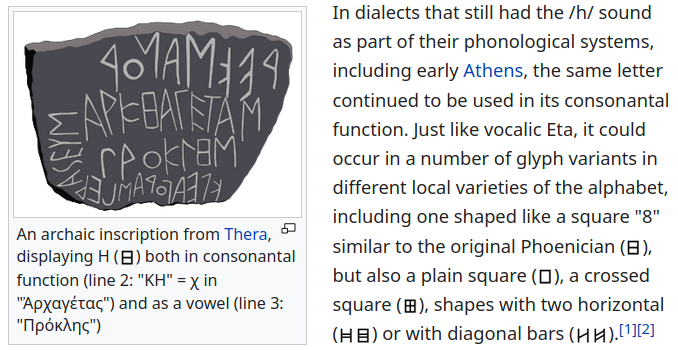
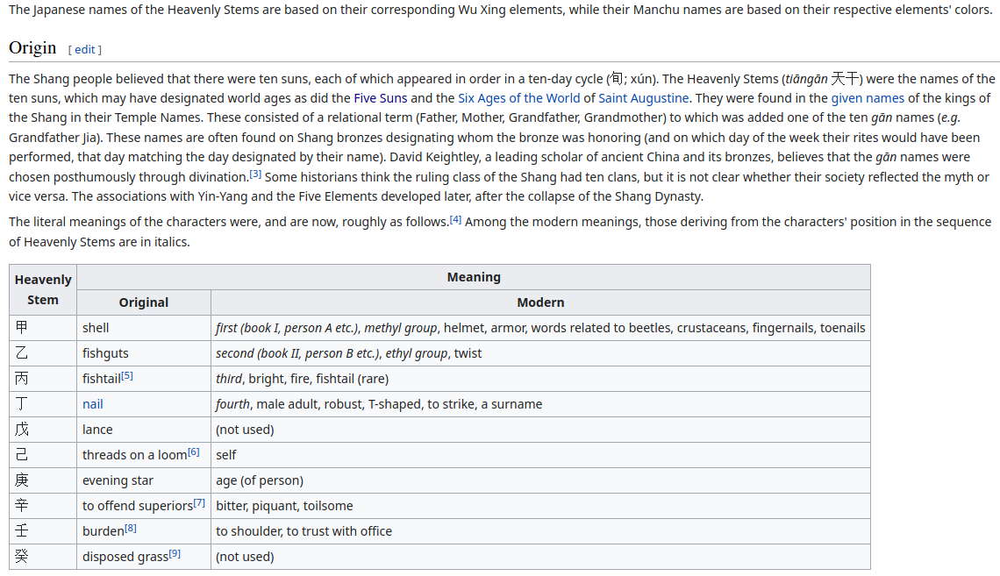
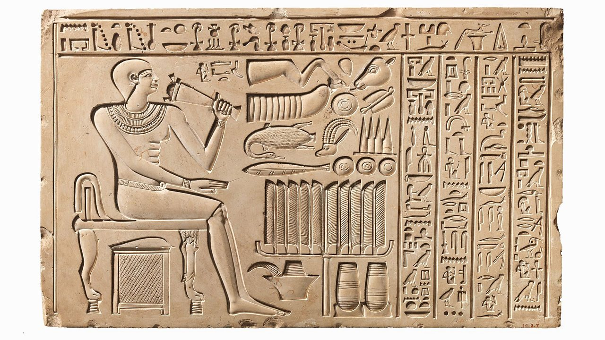

It is volume 11 ( 0 1 2 3 4 5 6 7 8 9 10)
this is a draft... draft.. draft.
I think only ai (or some unhuman autist) can recognize all the morphemes across all the languages: too large is the database in both space and time, so I'm only building the database of keys and try to reconstruct the origins of writing systems (this task seems to be more attainable)
Малява ~ Mail (and this is how cognates should work, directly, synonymously)
Халява ~ ? (offficial version of that word is hebrew halav, milk, as if in Israel repatriants got free milk and since then everything free is called halava in russian jails, and from there everywhere, but what would hebrew-speaking people do in jails of jewish regime and I thought jews don't tolerate milk in the first place, either way all that story reminds the joke about стибрили way too much)
Dal's version of halyava is that it's a name for bootleg is not cognative enough, but it's still better, and not because polish soldier placed some little presents or loots into their boots, but because when the boots are dead, the bootleg is still in perfect condition, so it is free leather for the shoe-makers.
And it is just one of examples that not every word can be re-cognatized into smaller parts.. but isn't -лява common between those words? If malyava is mail, isn't halyava from the same language? Let's dig in there, of course I cannot disassemble the word when I don't know the lanuguage it is from, some of them are rather different.
Let's try to reinvent the writing system from the hight of what we know so far:
/ is what? 1? i = yea or iie? In japanese some shwas stand for yes and no: singls shwa is yes, double is no. But maybe it's not always true, I don't know japanese too much, so why do I speak of it when I have russian perfectly arranged in my head (perfectly is not perfect, because I'm only human, but I'm a native speaker and a mighty poet, and dig into the language field, you cannot find anyone better than me. Maybe if Iknew ukrainian, укроили выкроили. Киев от Москвы независимость получил. Всего-то
Memories. I would erase some of my memories, they turn me into something wrong, into a madman, I get mad because I get angry at something I cannot change, but probably that's how we learn, we analize and recognize that the next time we should act in a different manner. And now, when we learnt, we should erase those unhappy memories. Have I learnt everything from it. I think about my brother who's in a worse situation instead of me. Because he was drunk all the time not to think about what he did badly.
Я хочу умереть от плохих мыслей. От осознания собственных ошибок. Несчастные мысли долой. Но невозможно, ведь я повесил на себя пару крестов. И некоторые ошибки привели к осознанию чего-то, вот оставить бы осознание, а воспоминания их позволившие сделать долой.
Помню зашёл в церковь молиться (для чего? я верующий? посмотреть каково это, но может я разозлил церковников своим клоунским нарядом и тем что ходил по церкви посолонь даже после того как видел что служка обежал её противосолонь. опоздал на службу, ходил во время службы, гад и гадски себя вёл. смеюка смеет. овцой они видеть желают тебя. овцой. или бараном. тупым.
И эти мысли увели меня дивжению рук, которое я совершал там: я после знамения (перекрещивания себя) поднимал ладони кверху, чуть выше того места лба, к которому прикасался, и оттого то была не просто пентаграмма, а пламенеющая. У европейцев же скромный далет. или что это за буква? Ⰾ ламед глаголический, ламед значит учёба, вникание.
(следующие четыре фигуры это вид изнутри и снаружи, крестятся обычно правой рукой)

the eights or ∞ it was.
So from one perspective both russians and europeans are taught to draw crosses upon themselves, only some of them do it wrong way, and because russian church is more provincial, I suspect it to be in the wrong here, and also because both churches write left to write, why would they cross themselves in different direction, and if the prayers work at all, if they matter, it is obvious that europe is more comfortable for the living than the russia (even gay prayers are fulfilled there. one of the first things I noticed in Amsterdam is that sky is lower there, that it's closer. Which whether was an illusion or caused by the sea being much closer. Is sea where the clouds are made? Makes perfect sense, perfect sense. Туман в Сан-Франциско такой, что кораблям гудеть приходится в тумане.
That is not necessarily that profane as balls, it could be belly, живот is жизнь, life in russian.
Какая магия может снять магию крови? (коммунисты не для того столько крови пролили чтоб сейчас их потомки отдали эту завоюванную власть просто так)
Магия слова может перевесить магию крови. Об этом Христос и говорил, если я его правильо понимаю. Логос. Вначале было слово.
Термин «Логос» в словаре древнегреческого языка Иосифа Дворецкого имеет 34 гнезда значений[1][2].
Первый перевод этой строки на славянский язык осуществили Кирилл и Мефодий, именно они понятием Слово переводили греческое понятие Логос. Далее под Логосом подразумевали и закон всемирного развития, и некую Высшую Силу, управляющую миром. Позднее в трудах ранних христианских мыслителей сам Логос отождествлялся с Сыном Божиим, Иисусом Христом, «ибо Логосом-Словом спасал Господь грешный мир»[3].
Понятие о Божественном Логосе восходят к древнегреческим философам школы Платона.
В большинстве китайских переводов Библии для «Логос» используется понятие Дао[4].
Ἐν ἀρχῇ ἦν ὁ λόγος, καὶ ὁ λόγος ἦν πρὸς τὸν θεόν, καὶ θεὸς ἦν ὁ λόγος.
In principio erat Verbum et Verbum erat apud Deum et Deus erat Verbum.
Въ нача́лѣ бѣ̀ сло́во, и҆ сло́во бѣ̀ къ бг҃ꙋ [ᲂу҆ бг҃а], и҆ бг҃ъ бѣ̀ сло́во.
В начале было Слово, и Слово было у Бога, и Слово было Бог.
Моя расшифровка этой загадки: мама (первое слово, первый бог)
(выдели текст после той строки чтоб увидеть разгадку, you probably read it before)
Back to that cross sign: am I not drawing logic from something illogical in principe? If left side is so important that we have to touch it first, why don't we cross ourselves with the left hand? Either way, europe lives much better, and thus we can try to apply their church practices into our life. And if life becomes better, we can apply it further on. But rotations are some magical things, not just some formal traditions. If in 1666 something was approved, maybe we should take it away. If рпц is кгб, then we may contact this inner structure of the government from the side of the church.
Let's form the reform: church experiments: humiling our pride we try some other practices to see if they cause something positive in society. Постижение приворотных и отворотных движений. Т.о. с 1666 года русских отворачивают от церкви (что бне мешали пилить бабло?: просто чтоб не мешали)
Но если эти движения влияют не только на паству, но и на другие явления окружающего мира, то может им попробовать другие способы воздействия на паству. Привороты прихводят, отвороты отводят..
ходить и водить. х пассивна и глуха (на самом деле нема), в активна и звонка
отворачивают гайки и болты против часовой, может оттого и/что отворотным считается хоровод против часовой, а приворотной - по часовой, потому что и гайки с болтами прикручивают по часовой. Крутить отворотные хороводы в церквях значит работать на запад, они-то небо у себя прикручивают. Мы работаем с ними воедино? Выстраивая систему таким образом, чтоб всё божественное концентрироваллось у них?
оттого и (следующий текст явялется следствием предыдущего)
оттого что (следующий текст является причиной предыдущего)
схожесть и всхожесть - один предлог каким-то пока непонятным образом меняет смысл слова на вообще вроде никак не связанный: схожесть is likeness, всхожесть is germination.
> by lightly closing your eyelids to the correct distance and staring at a minimal light source like an LED of your phone charging in pitch darkness, you can actually refract and examine the surface of your own retina based on the light patterns seen.
i discovered this when i realized the pattern was consistent across different light sources and different angles.
I discovered something much more interesting that that in the same environment:
If you raise your hand between your eyes and the sourch of such light, you will see that the light is covered not from the bottom, but from the top.
If you close the light from the top, it will be disappearing beginning from the bottom.
It's whether some optical phenomenon I don't understand, or a glitch in the matrix.
У хвойных деревьев есть плюс: они вырабатывают кислород и зимой.
У хвойных деревьев есть минус: их иголки впиваются в руки, если земледелие осуществлять руками, а не инструментами. Кстати, таким образом это тоже плюс:
I think I should remove all my moaning about weed making me weird. Because it's very ungrateful of me, so I keep on smoking till I die, if I die. I just make it more responsibly. Not to let it damage my social skills. Not to communicate with people when I'm high.
And let's find the topic before we smoke.
Okay, I have a good one, it came to me earlier today when I was high in a bathtub:
Отчество. честь. читать. чествовать ~ чтить
The connection between чтить и читать (так мы и будем разбирать их по слову за раз, или по два, или по много, по целому кластеру, которых всего пара сотен, т.е. за год можно справиться если понимать что делаешь. Okay, I will be back in few minutes. will take a leak and fill the pipe.
Честь чесать (как за ушком, гладить льстить, а чествовать читать. А отчитывать? от, значит прочь.
причёсывать приглаживать при значит к? не, при значит с. к ~ с. to ~ with?
причитать is sorta moaning or mourning (gogle translates it as lament wail keen snivel)
not one of those words seem related to read. So each word is it's own sentence. Different sentences in different languages. synonyms are different words, thus different ways to describe the same.
There's a freaky theory, translating russian words into few russian words. As if ..I disregard this theory, because it uses some 49-letter set never existing before and the way they "реставрировали" её is ridiculous. Yet, if they're onto something in some other piece of their work: maybe that table is not directly connected to the interpretations of letters.
torch is source? (because of silly typo sourch. source is what people source.)
I will talk to the guy But now when I'm high, not now when I'm high.
bu = no (both are V)
b is also h, and Н is russian N
хуй - значит нет. пизда = peace, yes.
d and b are opposed this way. b is no, d is duh, да. (both да и нет are known all over indo-european space. Including japan? Not exactly, they separated from the whites later than some china. Cbina keeps bu. bu is chinese, actually, europe only knows but, and но [no] is russian but. (not in butt. they were so dirty or it's me?)
in japanese it's one huh for yes and two huh's for no. And it' seems A is D again. japanese хай (yes) is different from russian хуй (no) by that very vowel. A is D and U is V. сходится. офигительно.
Ад is actually the дА read the other way around? Is it a way to say No? Let's check:
Нет будет тень. И это взывает к другому фирк.. фрику, читавшему слова в обратную сторону. Я полистал и взоржал: очень широкое поле для интерпретаций (т.е. примеры не сходились напрямую) но моё тень для рая не настолько ли натянуто? ад это жар, тень это противоположность жары: тень yes? to yes is есть?
to yes is есть
потчествуя, чествуя, есть в честь is to eat. eat is yes? я выделил ту фразу в качестве почёта.
hon (short for honey. is honey adjective?) honour (honor) honest (look so much like adjective, adjective+er, adjective+est. and because hon is a short form of honey (what else? it's hon in common speech) honey is adjective (only adjectives have short forms in russian) and thus that theory of honour being honer and honest being its превосходная степень (хотел уйти в инет искать как это по английски, но я отключаю теперь интернет на время сеанса, а то залипательно)
honey is directly relatet to потчествовать. явствами. потчует, предугадывает желания. оказывать почёт значит угощать. медовухой? не знаю. мёдом. сладостями. чаем друзей я угощаю с вкусняшками. молоко многие из них не пьют, а то бы молоком угощал, предлагаю молоко, сам пью молоко при них же зачастую.
honest hon ест. (я не говорю, что это ступудовая этимология, я развлекаюсь и говорю мэйби)
honour hon our.
сладкий sweed (sweet came out like that)
с лад коий
with weed? (not with guns. не обязательно с лавровыми ветвями, может с конопляными)
sweet is related to weed? sweet weed? сладкие травы вполне себе устоявшееся словосочетание.
горькие травы тоже бывают, но и сладкий происходит от солодкий. травы (приправы) замена соли или соль замена трав? А что если использовали травы обоссанные для солёности? дикие древние наверное и не такое вытворять могли. И сейчас я хочу их обычаи обнажить в нашем современном языке? Может я потому и не доставил до сих пор, потому что часть меня считает что не нужно этого делать. Все эти неприличия являются проявлениями более базовых понятий, вот на них, на абстрактнейших да/нет и строй всё. даже если там проскакивает хуй который тоже нет. неприлично так писать, что я себе вообще позволяют.. кар аул.
позволяет и позволяют отличаются ллишь гласной. ю вместо е где-нибудь ещё меняет форму единственного числа на форму будущего?
всё все используют ё для единственного и е для множественного. не то, но близко. интересно.
мой мои добавляя ы делает форму множественного числа? ю это еы?
позволяете отличается от позволяет одной дополнительной гласной е.
где-нибудь ещё е делает форму множественного числа? весь и все. весе? в сем пространстве? все т.е. целый мешок? весь мешок. но все монеты мешка. вс е. е и с встречаются опять (как сколар и еколант, scriber and ecrivant) and here we se -er and -ant are synonymous. is r actually nt?
ᚱ could be ᛚᚲ, lc? lг
R is palatalized l? le?
ᛚᛲ?
or is ᚱ long form of ᛚ? palatalized consonants are naturally longer. Burgess even used double letters to show palatalized forms of them, something not that common in English for some reason. Were they speaking like that to show their firmness? It came out beautifully anyway.
Now I wonder if I should read Burgess as бёрджесь. жесть indeed.
Back on track. Honour. our hon. hon is good? hon is honest. честный мёд? чистый мёд.
I have less than on hour before some training for leaders and enterpreneurs start.
So let's see what we can do in that 45 minutes. I will tell when it's time.
Давай придумаем другую тему, ту честь честность читать отложи пока, глубокая тема, хорошая.
нет, сорок минут, давай отвлечёмся, не насилуем мозги. спасибо мозгам и всем кто рядом.
вся и всё обе имеют все как форму будущего числа.
вся и все как два и две? не. сложная тема. отложи говорю.
Okay, see ya next time. I think I'm already there. I should have some rest. Tot ziens.
rus as village is known to english too: rustics are villagers.
Now a dilemma. Should I read or should I get high and write.
> "While researching a number of ancient alphabets, I found symbols chosen to illustrate their letters were not only mnemonics for sounds to record speech, but also for an ordered path guiding seed and soul through life. Promising a return after death, the path eventually morphed into the 'spell' magic of runes and such alchemeical traditions as Masonry, the Kabbalah, Celtic Oghams, China's I-Ching, and the path of Tao, They also included Mysteries of the Golden Fleece"
But in that work: https://www.academia.edu/43436554/A_MYTHIC_HISTORY_OF_OGHAM
You further only mention it in the context of
" Assistant Ogham is Talamon (Teilmon). He sailed with the Argos in search of the Golden Fleece. On the way home in the company of Hercules, whose own journey took him through the sky, Telamon stormed the walls of Troy. First over the wall, he took home a daughter of Troy as prize."
Which is extremely obscure for me.
What is the connection between alphabets and golden fleece?
Among other things, 72 languages were spoken in Colchis (where Fleece was found). This being an important astronomical number as noted many times in paper.
According to the Greek myth the Golden Fleece had belonged to a golden ram that Jason's ancestor Phrixus had flown east from Greece to the land of Cochlis ....His stepmother is a daughter of Cadmus (who gave the alphabet and various Mystery traditions to the Greeks).
"Ogham stories often refer to events around the Black Sea, an area of early scripts. This was the location of Troy, Militus (settled by people from Crete), and the tale of the Golden Fleece. First Bird Ogham, for instance, is Besan, 'pheasant'. A bird from the Black Sea area: "Pheasant, the phasian bird, the Phasis, a river of Colchis" (OD). Colchis hosted the adventures of the Golden Fleece, another story associated with golden mysteries, metallurgy, great goddesses, and astrological serpent-trees. 72 languages were spoken in that land. Note: Ancient Iberia, in addition to Spanish Iberia, is a kingdom located next to Colchis." ( p. 61, Alchemy of Alphabets paper)
Hope this helps.... myth is a tangled ball of yarn but does have overt links. Judith
an searching for ogham "black sea" delivers this:
https://taliere.tripod.com/ogham.htm
Gaedel mac Ether mac Agnon or Aingin, who, according to the Auraicept, was one of the inventors of Gaelic was the son of Feniusa's father's elder brother. He is also said to be the son of Amergin since Amergin was called both Aingin and Ether. This sounds as if somebody was trying to cobble together several bits of information and doing a bad job of it! Gaedel's genealogy is given Gaedel mac Ether mac Toa mac Barachan and he is described as 'a Scythian Greek'. 'Scythian' was the collective term the Greeks gave to the tribes of the area north of the Black Sea. 'Scythian Greek' might mean a native of Miletus. The other authors of the Gaelic language were Feniusa Farsaidh and Iar n-Ilberla (of the many languages) mac Nena.
and
There have been other suggestions; Robert Graves suggested that it might have originated between 1600-1400 BC, somewhere on the southern coast of the Black Sea. It has even been suggested that it was derived from Hittite cuneiform, although this seems very dubious. I have even seen fairly wild suggestions that it originated in Atlantis and was subsequently spread by the Atlanteans to both the Americas and Europe. As you see, it has been the subject of some wild speculation!
getting high it is.
talk and tell.. is that k к? to with? to talk is to tell with somebody? because in the context it's not tell but talk. told and talked are different only in that k.
tell is toll is call is
I think I smoke too much. Previous lines were written after one toke. Why would I need more. I take at least three, and what I'm looking for can lay much closer to the surface.
Okay, I'll learn. next time I smoke just one hit, will make it better. just one hit and we will be alright
Just one hit will make it better Just one hit and we'll be flying high
Let's see how far I may thnk.
What do I want?
Sufficient knowledge to build immortality so I can have time to acquire the absolute knowledge.
I wanted to go on about why I want that and why is that other thing is important, okay let's plya this game and see how far it goes (but I'm here reporting that it is one of those hyper-importance delirium (like calling your mom telling to keep the pine's root in some soil so it grows. a stupid phonecall. since then it all may wait until I'm sober.
Drawing on my whiteboard I occasionally draw 8 as ꙋ and I look at it from the alphabetic point of view. (look = took?) then 10 is obviously T and Х and it makes 9 not only gевядь двд is дэ ю дэ. д = 3
thus 9 is p (the labial is needed between vowel and lingual. and 9 does look like p in a way, and thus 9 is פ
and let's try to find the first 10 or 8 (I wanted to say 10 or 9, but my hand typed 8 instead of 9 and I thought whij 9 if there's T? is S ~ T? And S does look like 9 too. an again 8 came instead of 9 and S does look like 8.
is S also P? W as Ш and P as W? Ш and Ф? Ш as open form of Ф? С & П? П and C as b and d.
final row is old age and thus unhappy? lmn ломан? опрст sounds as у(to) parasite (to become parasite or to feed some worm)
Прионы в мозгу как неразрушаемые части нас? Изучай прионы, их резистентность ближе всего к бессмертию чем я знаю. и почему во множественном числе? Может они записи видеомысленной информации, которые могут звучать как память. И тогда возможно закопанные трупы родственников хранят всю память в черепах. если черви их не растащили. может они песок шишковидки и не интересуют. В любом случае, этот песок должен быть сохранён у мумифицированных, и тогда со временм можно будет оживить личность умершую тысячелетия назад. Это очень заманчиво. Очень многообещающе. У меня столько направлений для исследования, надо бы давать консультации тем, у кого тем для исследования нет.


Прионы Прут? Прионы куру вызывают, мозги поэтому есть ен рекомендуют. (that ен is obviously не)
ен as un-
to as оf? obviously no. but of is от and thus to and ot are the opposites, not synonyms.
что в лоб что по лбу (я думал что об лоб что по лбу, потому что по и об синонимы или почти)
в and об (об более упруг, в более вязко)
об is also obo, about. о самая простая форма. эти предлоги прилагательны? предлоги предлагательные? прилагательные прикладываются. какой какая кокое кокие
к потому что приКладывается?
лаг в прилагательном ис клад клад ис лаг плюс предлог к. а не этот же предлог ли г в лаг ложи г ~ ж. and ж in russian is under г (which is c in latin, but sounds as g)
ё could be в (under б and today next to it) because her is её turns into ев (eve, or semantically in russian grammar it's eves's, belonging to many eves) then.
в под б, ж под г, з под д. видишь паттерн? е под а, вторая строчка долгая (мяхкая) форма первой.
оп и уф говорят, что и следом такое же было. Русский более древний чем латынь? Чёрное море полно анаэробов, в них наверное кладов до кучи. Надо найти способ запустить поискового робота в эту гущу анаэробов чтоб посмотреть какие клады море там хранит.
уфх как opt?
уфс более чёткое смяхчение (удвоение?) от opt
но если там изначально было не опт, а опс, то уфш является более протяжным отражением ея.
тогда АБД было отражено в ЕВЗ и если Д звучало не как d, а как ð, как в греческом например, то вторая строка была не ЕВЗ, а ЕВЖ.
но абгд говорит что четыре элемента, тогда и о-строка должна быть шире
опст
уфхц (х как ш опять и снова)
и-ряд чужероден? лмн как ломан ритм. aa=e? I thought aa=o. (ee = i, so why not aa=e? так а ис эй, е is i. lmn-row took I by their l? is lmn efg? l and e look very similar in cursive, maybe more similar than l and I, and e and i look the same, and e sounds as i, it's name is literally [i:] and
42 as meaning of life makes sense because it's multiplication of good and evil simbolized by 7 and 6.
and you can meet 42 again in this math madness:
6 has 2 множителя, которые не являются ни им самим ни единицей, 4 оnly had 1: 2.
so does 8 (2, 4) and 10 (2, 5)
12 has 4 множителя, которые не являются ни им самим ни единицей: 2 3 4 6 (and it's a powerful record, because numbers before it only had 2 tops)
so does 18 (2 3 6 9)
and further 24 has 6 (2 3 4 6 8 12)
and so does only 42 (2 3 6 7 13 21)
is there third with 4 and 6 between them, I don't know and have no time to count, have to run doing business, yesteday seminar works. Either way, that is where we meet 42, and again it is in the same sense 6*7, so it's not a coincidence, but some semantic connection between both meanings of them. 6 is the first most divisible (there's a mathematic term for it, I even mentioned it in previous volume.. hold on.. it's some of these two: Superior highly composite number. Colossally abundant number.
But no. even 24 is neither: colossally abundant numbers: 2, 6, 12, 60, 120, 360, 2520,
Superior highly composite numbers: 2, 6, 12, 60, 120, 360, 2520,
What's going on here? Are this terms synonymous? Ah, yeah..
The first 15 superior highly composite numbers, 2, 6, 12, 60, 120, 360, 2520, 5040, 55440, 720720, 1441440, 4324320, 21621600, 367567200, 6983776800 (sequence A002201 in the OEIS) are also the first 15 colossally abundant numbers, which meet a similar condition based on the sum-of-divisors function rather than the number of divisors.
24 is the smallest number with exactly eight positive divisors: 1, 2, 3, 4, 6, 8, 12, and 24.
so why is it not in those categories I wonder..
okay, I found it. 24 is superabundant number, one of these: 1, 2, 4, 6, 12, 24, 36, 48, 60, 120,
грозить и поразить случайно сходны или нет. грозящий разящий.. грозит грохочет как гроза и гром громыхает. гро это гор? кто знает, кто знает.. Если так, то Гор Гавриил, а Ра кто? Рафаил? Я думал Михаил. Ра лечит или калечит?
I was enjoying that second day of that own your future virtual conference or whatever it was. And I got high in the end and I completely lost interest to that thing. That thing makes me think that capsules (and not this book) is what I have to focus on. Focus is the key to success and this Dean teaches about it as about the dot where you have to specialize on your goodness, on what I'm good at. I'm good at this language book, but it's still in the process of discovery. I think I should finish it first, not to lose the momentum about it. So I think I have to get high until I finish this book. It's a responsible (and less selfish thing to do. To finish it and to
Ig jrd.
If Jesus is god, there are many gods in the world: jesus as an avatar of g.o.d.
good old dog. somehow it came obvious to me.
t.o. m.e.
t.o.
thee arOund
a round
a round round is o what are r,nd nd as in and and in sound and found and find and mind and behind, hind, wind,
bind din't? nd is not?
bind bin't who is bind don't be by themselves, they're more like stuff. stopped.
bind find mind first three in the alphabet which came (and which is clear in modern orthography) are labials to that and or not. find fin't didn't finish? din't fall?
dill I missed. Most of foreigners don't know dill. It's some local meme.
blin, prichem sdes dill? dind would be the example.
Was it my subconsciousness подсказывает что ind is ill. ill is isn't? well. went. I want what is well.
Mind is mill? It's on hill? but hill is more hand than dead. or is it head? is ead also ill? яд? едом?
dead is a typo of head I didn't even notice, so beware of some typos liike that uncorrected. why d intsead of k? instead of h?
d and h are even on different hands. hand hanh рука ruka end ka? kanchatt, to cunt;
ah, yea
t.o. thee around
m.e. my end
these words were the first associations to the letters. And to the context probably because to wouldn't make sense in the sense of some other sentence: apply the nut to the bolt. what is thee? thee apply? maybe I apply the nut to the bolt. t is that, the. The is the simplest T-word. Not thou. Не выпендривайся словами которые иностранцы не понимают.
А is A?
Will see in the process of this experiment I start today.
Start So to are this or is to which came to my mind which forgot of what I just said, let's spread if further:
if is it there, okay, start
so this around are to, are this n. o is around or on? around is not from a to b, it's on and on.
around R and D? to the right and dexter. всё время направо это по кругу
и я этого не осознавал столь очевидно до того, как я предыдущую строчку набирал.
RounD or R and.. and on was supposed. rounding
i.n.g. I on Go.. ng is on go. in go! ing is in go. and that is its meaning.
in.g
do.in.go
(ing adds "in progress" to any verb, which this gerund thing means. in go is much better term for ing.
ОПРСТ is опадание и R и просто shit. упрост, упорост. не на погост, а в погост.
четвёртая строка это четвёртое время года. зима? наверное. пятая строка это безумие сатанинское, 5 вместо 4 это 10 вместо 8. 666 вместо 365
А
E
И
О
я думал е=и.. тогда
А
Е
О
У
у как уинтер отлично подходит
o как осень? AUtumn. отлично подходит
e лето. l'ete.
a весна? спринг? нифига не подходит. Если только вдруг по какой-то случайности бB не первая буква.
У последняя перекликается с тем что тетвёртая строка в иврите начинается с ע
но предыдущая строка начинаясь с י перекликается с i-line that I cannot deny it. פ is p, нот ф, ф is literally doubel double p. but yet פ is both. thus ꙋ is оу (ou) ע is both o & u and even y, and in this Z in english alphabet resonates with greek Ζ
ΑΒΓΔΕΖ like UVWXYZ?
only Γ doesn't reflect W well, second worst is Δ which reflects X only if they both reflect T in their own ways. so let's put them next to each other
OPQRST
ABCD
ΑΒΓΔ
UVWX or wouldn't it be УФХЦ? the voiceless all along. Am I going between unrelated sequences? Or do these comparisons show, that there's a glitch from when they went from three mothers to four whatever, four elements. I know that it happened in plato times, but it could be earlier (at first I wanted to say that it happened in medieval times, until I understood that plato already spoke of four elements. Probably here he plagiarized Demokritos's writings, bt more likely Demokritos didn't connect those atomic elements to the abstract planar figures. It was Plato's invention so to say, he united unrelated concepts and imposed his contribution to be monopolic school with the help of christian gay mafia.
And the only sense I see in which he created science is that his philosophy was some philosophy alright, but it was so false, that all the scientists understood, that it could be philosophy, but it definitely wasn't science. Materialistic science is the science that develops technologies wherever it is applied. Idealistic philosophy is, plainly put, religion. And it uses dialectics instead of logics, so if Aristotle was a student of Plato, it is high chances of Logics as a part of scientific method being classified, theorized, written even by somebody else. Just as I believe that Master and Margarita is written not by Bulgakov, but by his wife, so I believe that Aristotle just authorized the book on Logic which Plato didn't burn, and it was some secret book, the first edition taken out of the circulation before it was copied. And in this Aristotle made some service to the culture. But yet this alone could give their school some undeserved authority. Or I could be tripping all along. It's either way, I don't really care, I deliver what I can. Both good and bad are intertwined here in some eternal 42 (it's 42 whether you multiply 6 by 7 or 7 by 6)
So, more simplistic 4-line of hebrew:
א ב ג ד
ה ו ז ח ט
י כ ל מ נ ס
ע פ צ ק ר ש ת
ל מ נ ר probably appeared later, when the alphabet was
simple sequence of vocied and voiceless consonants as it is still
pretty much in russian, if we don't include there these sonors as
they call it, common people don't know any sonors, but they do
know voiced and voiceless, so this sonor shit is some academic
phantom.ה ו ז ח ט
י כ ל מ נ ס
ע פ צ ק ר ש ת
so where would hebrew split into voiced and voiceless if we remove these sonors, these are the only sonors hebrew has, because י is vowels and they don't have any other й. and so because l is also a candidate for I, because of M mostly, so are these sonors some I-fluke? is I added later? Were there only 3 vowels? Of course! Before they figured out 4 times of the year, they had 3 times? or even 2? But back to our hebrew, let's remove those anomalic sonors and see where it breaks then. k is the key, but it's all the klmn is the key. Italian doesn't have k, that kaf is C in their one, I'm still unaware of the details, let's look at the sonorless hebrew
א ב ג ד ה ו ז
ח ט י כ ס ע פ צ ק ש ת
ח ט י כ ס ע פ צ ק ש ת
Honestly, such division makes me want to go all
the way greek and colour ח vowel and ט labial.
Then י is sonor й and has to go too. Let's go crazy and consider ט θ and f.
and ח is our И now. Let's assume Ben Yehuda was wrong in these two.
א ב ג ד ה ו ז
ח ט כ ס ע פ צ ק ש ת
Now כ perfectly reflects ג and ס probably indicates that ד was pronounced in greek ð-manner.
and if ט is f, then ב is v.
or is that ח line opqs?
and the next and fourth line is even further into the winter of losing it? neither voice nor distinction?
уфцчшщ
where's h? they have both voiced and voiceless h, but because ה reflects ע in here, how can I consider this vowel some voiced h, it's some semitic misconception, or whatever snake traditions they have, their phonology is alien to us, but they still use a to write abjad into russian, if they consider that a consonant, too bad for them, we consider it vowel.
ה line is so short and basic now and it ends with z just like russian does. And it tells that the verbose or lettrose fourth line is in comparison should have been ע פ צ ק ש ת and thus each of those halves were some 7-tone octaves and then that fourth line just had to add some thee more voiceless letters to balance out those 4 sonors and י.
So lets compare those sonors and י and these extra voiceless we don't need for this newfound symmetry.
י ל מ נ.... צ ק ר ש ת
Then י is sonor й and has to go too. Let's go crazy and consider ט θ and f.
and ח is our И now. Let's assume Ben Yehuda was wrong in these two.
א ב ג ד ה ו ז
ח ט כ ס ע פ צ ק ש ת
Now כ perfectly reflects ג and ס probably indicates that ד was pronounced in greek ð-manner.
and if ט is f, then ב is v.
or is that ח line opqs?
and the next and fourth line is even further into the winter of losing it? neither voice nor distinction?
уфцчшщ
where's h? they have both voiced and voiceless h, but because ה reflects ע in here, how can I consider this vowel some voiced h, it's some semitic misconception, or whatever snake traditions they have, their phonology is alien to us, but they still use a to write abjad into russian, if they consider that a consonant, too bad for them, we consider it vowel.
ה line is so short and basic now and it ends with z just like russian does. And it tells that the verbose or lettrose fourth line is in comparison should have been ע פ צ ק ש ת and thus each of those halves were some 7-tone octaves and then that fourth line just had to add some thee more voiceless letters to balance out those 4 sonors and י.
So lets compare those sonors and י and these extra voiceless we don't need for this newfound symmetry.
י ל מ נ.... צ ק ר ש ת
and I notice that any of those voiceless past פ
(which reflects ו) can reflect ז: if it is צ the ts,then ז, is
dz, which is very close to how it's interpreted today and works
well with russian з (and ж is a variant of it) and if it's ק,
then ז is G, which it well could be. then what about ג or is ג
hard G and ז is smooth g, the джи, which makes perfect sense,
but then ק is ч. but I thought ר reflected ч more.. They all
could. It's truly weird and very polling, but I work out of a
hypothesis and just see that there are too much of place for
this hypothesis, so it must be true. It well could happen and it
could happen in more than just one way. So we show it for those
other letters: if ש reflects ז, then ז is Ж which it well may
be, because of russian Ж, because of G, because of few other
reasons maybe, and if it's ת then ת is θ and ז is ð which is not
all that far from z we see in it today. But if that's so, what
is ס we talked about before? It should have been t then. and ט
as п is even more weird, than ט being f.
ט is t if anything. Also how dare I consider ח vowel, it's unheard of. And if it's a false part, it doesn't damage that part about reflections of z much.
ט is t if anything. Also how dare I consider ח vowel, it's unheard of. And if it's a false part, it doesn't damage that part about reflections of z much.
I placed myself in a bathtub, and there I used pencil to go to suffixes of pronouns first (pronouns are probably proto-nouns)
что имеет приставку к то, и последующие суффиксы показывают, что его ему - это всё падежные формы не столько место-имения (вместо-имени-а? pro-noun, за-имя(существительное) pronoun is thus is also proto-prilagatelnoe, because имя прилагательное и имя числительное are also names and thus nouns. huh?
ч-то
ч-его
ч-ему
(вин.пад совпадает с им.пад)
ч-ем (им?) E = И
о чём (о нём. и таким образом им содержит ту н of он! него (от него - белого имеет такой суффикс, но не человека у человека ека может быть искажённым его, но скорей всего это просто совпало что там ек у человек. мужика тоже совпадение карнавала крана - никакого его, а тольок а, совсем другой суффикс вроде бы. А потому вместо-имениА это вместо Adjactive. Adjective.
И именно этот суффикс пишется через г, а звучит через в, чем очень близит русский с японским (где пишется ха, а звучит ва, причём то же в какой-то очень распространённой частице. и лишь одной из многих. постфиксы в японском, какой-то советский умник или умница называли их на русский манер гаонимами, но было бы больше толку, называй они их просто гаони, и ещё больше толку перечисли они в этом названии их все: гаони ваено and so on.
кто
кого (его) О = Е
кому (ему) О = E? qu+(уму)ему (ис он = ум? ис она = wah! ей! ye-yo!)
(вин.пад совпадает с род.пад: ругают по матери, матерят. а вещи по имени, ибо сироты они)
кем (им) Е = И
о ком (о нём) это о перед им порождаем проявляться носовую суть этого его
этого это э как ה, the, артикль определённый, хотя просто то вроде не менее определённый, хотя и менее, если это, то он это уже взял, это как ко in kore & koko and other japanese words kokoni is here. и таким образом здесь это падежная форма от это, ни is место in this case.
dare is who
doko is where
dono is which. and that is literally the no of genetivus. thus these postfixes are suffixes of russians? Russians and Japanese share the grammatic part of their language.
It most likely means that japanese and russians were one empire and lived together in the same culture as tatars and bashkirs somehow live with russians peacefully for several centuries. So those japanese were russians no more than tatars are russians, even though we speak the same language and our children often interbreed, enriching our genomes slightly and peacefully, only some few percentage of our populations want to have some exotic prince or princess, and the children usually come out well, so as some lucky notes we accord nicely. But I do want russia to be influenced by both Japan and Europe, and I can have it if altaic nations gravitate towards Japan and caucasoids gravitate towards Europe. And as a result we have two great russian nations instead of an obsolete old one. It will very much look like division of cells, with borders or not, with pores between the wall anyway.
Чего чьего (это из тех картонок из ванной)
Но там на картонках ещё курсив который здесь только фотом можно передать, но сканы следующей партии будут позже. там где я писала о=е, я поместил курсивный ههه ,ه, не знаю правда это или нет, но забавно.
А ещё там сравнение А и О строк
А Б В Г Д
О П RS T
R reflects V? as in runes? This I came to myself in here. There I compared
ABCD
OPST (seeing that there's no R's in A-line, and even Q (being less common) can reflect C, but only cursive r reflects cursive ч, which is how c is read in Italy. And etruscans as russian predecessors become very probable again, like planets approaching and running away this national concepts are, now it seems to me that russians are quite european nation, smeared and oppressed by those who took the Italy from us. The Romans. Так что борьба между народами это в совсем недавнем прошлом по сути борьба между городами, полисами, между силами полиции разных подразделений, разных муниципалитетов, разными policies and polities.
Ane so R & L could be added later in time to something like
a
b c
d e f
g h i j k
m n o p q
s t
u
and then alphabet did come through phase of Pythagoras' tetraktis from which I found that axial symmetry.
a
b c
d e f
g h i k
m n o p t
or maybe, that k and the sonors go all away as I thought of it yesterday, and then the actual tetraktis emerge:
a
b c
d e f
g h p t
for example
and we remember of that voiced-voiceless thing and I see how only c & g break this thing and I rearrange them in greek manner:
Α
Β Γ
Δ Ε Ϝ
Κ Τ Υ Χ
and I botched the final line, leaving the letters past T by intuition or nothing at all (the letters before them I've chosen so that they reflect the first half.
And I realize that to reconstruct this tetraktis, we need five letters in the first half. And that is how russian goes. two labials and two linguals. and then two vowels multiply those consonants into this vowel two (duo) and it is in russian this voiced-voiceless thing was found, thus it's only natural to despise the official history completely and only to look at the structure of the alphabets and the stories they may tell. not some professors, we know how cheap their words go.
А
Б В
Г Д Ё
П Р С Т
The final line here is the meme of ёпрст, the other one is ёклмн, but it's A-line and O-line, the only lines of russian 5-4-6-5-7-6 alphabet. And уеt as й-к-л-м-н is some new addition, o-п-р-с-т could be the first form of that spell, to which й-line tried thus to rhyme to seem legit, or.. what? Why doesn't опрст reflect абвгд better? Let's see which of them is in wrong. Let's first try to work with the voiceless half:
А
Б В
Г Д Х
П Ф К Т
And here it's obvious that k before T is c, the с, the s. or maybe it is q? after пэй и фэй!? that probably caused some dispute in different scholars schools. But let's try to arrange АБВГД aligned to more memetic ёпрст:
А
Б Л
З Д Ё
П Р С Т
ну, такое.. it looks like both ёпрст and ёклмн were some memes from the same period.
If sounds can cause rain or end of rain, and I think vibrations may do this, then spells are tones added to the drum, and thus their sounds are important mostly in vowels. And vowels were excluded from semitic mind. I wonder when and why.
That idea of comparing russian and japanese suffixes is awesome. Especially in the context of pronouns' suffixes. его ему where -го is literally no, as it is vo phonetically, and actually japanese has that ga too: waga is my, where wa is the morphere for me, and ware is a full form of that wa, or more normalized one.
Подиум = подъём.
if T is 10, 11 is U, and that is what
ᚢ is that demonstration of the new staff attached to the previous one, this is the longes stroke at the staff and thus it is really something. and ᛆ is the 1 and ᛚ could have reflected it, mirrored it, as some central letter? As some final letter of the first half maybe. If MN are the central letter, L does end the previous half.
a b c d e f g h i j k l
mn
o p q r s t u v w x y z
perfect match. and o as doube a, and z as double л
л это галочка а z это перечёркнуто? да и нет.
f reflecting t is very beautiful symmetry, especially because it is near the centre of the composition. And that central position is not exactly central. and this alone make me ask the second half, all those ij's and vw's
Й has brevis and called i-short. such is the J and it is not longer (as it is in i & j) but J is just swashed half of I, the י. And half of who or what the is? of ו. and ו is labial which is perfect to lay next to that half. But וי is not the order, not the actual alphabetic order. it's 16 ten six. and also iv, eve in modern orthography)
a b c d e f g h i j k l
mn
o p q r s t u v w x y z
is much more symmetric until that very ft. what goes further makes almost no sense. h~v kinda does, суффикс го (его is the go) читается как во, большой палец ввекрх ис во ин рашн энд go in english.
это ид1т = это катит (грузчик катит пускай) ha читается как ва, г and v are essentially the same tick.
butg bug жук ~ v, г and that is also c is of b not of d. c of d, but was burnt born by b.
born ~ burn ~ испечён. писять печь но ведь писять течь. п is digamma, c is gamma, t is trigamma.
гпт is спт
which is pretty much the same (г is officially c, what were the chances.. less than ten percent. 4%)
26 is a funny number that when you work with some letter, the chance of it's meeting the other pair is 4% per symmetry, and I havemany symmetries, so is it or is it not a good number? It could be or be not, those p evaluations in math and science I wonder what it is all about and how do they count it. Ah, you see you had to learn the fourth and fifth course to know that. But previous three were disgusting.
l reflects z (never before were they together, I don't remember that. But I will see all the pairs постепенно, по мере открывания y would be reflected better by the h. it could be i, j, h, g l next to l, and it is k, the worst possible reflection, so I do what? I see symmetry where there's none. But isn't chaotic information influencing people? Like face on the moon, whatever the images are in it in different cultures. карикатура про борьбу утки с кроликом может быть вызвана подобными разночтениям.

Humour distracts, so I have to scroll this image up to keep on working.
Humour is probably some tool in the language development. Funny words stick, dull don't, unless they're made official by some retards.
some state-legitimazed words, but cia is see I a(ll)
and fbi is cheff be I. f as some boss is like faraoh maybe, natural to me, and cheff does sound as ef, bet chief would fit more this role, it's in the chief meaning I used it. have is not worse f, and have is own, is what boss does. boss is just is, ust be, just B. F is who gives a fuck. F is some fuck.
nypd is naturally new york park dead is the first and thus simplest words that came to me for pd. and park is in more simple form is put. and d is death, dead, die, do to, but die is more simple, ай is less tense than U.
U is like ᚢ if they're just two staffs. The second staff, after the T is done? Why would we need new staff? New aicme, the additional symbols. maybe even digits.
T as I? if V is what follows it? YVX would be great additioanl symbols after T. And that is exactly how they're in greeK: ΥυΦφΧχΨψΩω
That YVX sequence (UFH is voiceless as it should. So is it greek, not russian preserved that voiced-voiceless thing? Let's see:
ΑΒΓΔΕΖΗΘΙΚΛΜΝΞ
ΟΠΡΣΤΥΦΧΨΩ
ILMN is how italian alphabet has it. And no fucking Ξ's.
Ρ[r] is also a deviation from the voiceless character of the second row. and if it goes, it goes with Λ and it makes M go after the I, which it should, so let's draw it again:
Α Β Γ Δ Ε Ζ Ι Μ Ν
Ο Π Σ Τ Υ Φ Χ Ψ Ω
I didn't expect them to be equal halves, or did I? I did not.
M (for Mind) next to Ψ is greater that E next to Y (not next, opposing, opposing is the word)
Z next.. across,,, I don't like neither of these words. Next is not.. what. I like this word next, but it's not exact enough, which way next, where is the line with you
Z reflects Ф and it's great, because of how it used to be F after E in greek, so they say. And then Z faces X as initial X sound as Z. X is just some voiceless form of Z then, X is S then, and it makes Ψ some voiceless form of I and Ω is the voiceless form of M. Are these consonantism coming up? I'm jsut surching, it is reSEarch.
That ending messes the system. Let's rehash the facts so that theory works:
Α Β Γ Δ Ε F Ζ (F[w])
Ο Π Σ Τ Υ Φ Χ
I remove all the problematic I line (I is a numeral, IVX is YФХ, I line made by those who remembered of vowel-labial-lingual, and then distorted by those who didn't. Ψ and Ω are sme local memes, and that is their excuse to go.
The only problematic piece is different quantity of notes in A & O lines and in E and Y lines (Y is I? or is Y O? it is U. u is и in russian cursive, so nations probably had different views about what the new letter should be. Probably russians had low tone, they needed i because they pronounced о as u already? I'm simply speculating, looking for the perspective to see something from.
line of 7 is awesome and if we unite ГД and СТ in clastes, we can, but what does it tell us? That different dialects шепелявили more or less.
If Σ is shin, Г is ж as G is дж
but if X is shin, then Z is ж.
The rows 1 & 2 are found to be reflecting itself in the short and hard and long and soft forms.
Thus B is not Vita, but Beta, as they say it was. They read it in some play where rams said ΒΗ so I was told that Goethe wrote. I could be wrong, no reference here.
and so do 3&4, and this guess allows us to work with those 7's further into 6's:
Α Β ΓΔ Ε F Ζ (F[w])
Ο Π ΣΤ Υ Φ Χ
seing how Γ and Σ dont reflect each other much, but meet in the C, I go for
Α Β Δ Ε F Ζ (F[w])
Ο Π Τ Υ Φ Χ
or, could it be
Α Β Γ Ε F Ζ (F[w])
Ο Π Ϲ Υ Φ Χ (Ϲ [k])
Х cannot be S (never saw it as S, Z is the closest to S it can do, even though it does contain S when it's kS?
X is rather Sh in some portugese or something, I hav shown it before, when I (or ai) combine these pieces in few specific chapters, there it will be.
a is a half of B. It is from new bath pagaes
a b c D e f g h i j k l m n o p q r s t u v w x y z
I need to use some fantasy to see the ɔ-crescent in h and j and who knows what am I supposed to be with letters after k? l reflects j and thus even though k includes c, the order is broken at l looking exactly where c does, being c-crescent too. and m (just as n) consistss of many ɔ-crescents
c and ɔ would only lay next to each other if b was ɔ because it is also v, which is u, which is oo, ω, o.
or there were only two lines then, a and o lines. single and double. and then it could be
abcD
ɔpqT
I would like to see ɔpst he, but I've never seen c as z.
s (probably as ш in the u-line) reflects z in the second row. So greek is authentic? Of course it is, just different culture's view on some fundamental thing as alphabet, and voice strong enough to stand its grounds and to spread even to India.
Древние греки обнаружили письменность брахми в Индии в использовании, кгда приехали туда. И лишь потому считается, что брахми - древнейшая письменность востока. На самом деле она всего лишь древнейшая из известных европейцам. Но там просто море всяких письменностей, большинство вообще почти никому не известные пылятся или скрываются.
ɔpqT was to follow that ɔcɔc sequence. it doesn't. p looks where ɔ does, but we saw it in d looking where c did. and p doesn't have this excuse. Unless both D and P are some special moon. between c and ɔ is newmoon. d could be dark, p rings no bells though. because p is ɔ-crescent, it's full moon, see next.
ɔpqt (t as l, thus as c, just as q was just a moment ago)
so ɔp and qt are two ɔ-crescents and qt are c-crescents (thus p is probably full moon, p~f, polnaya in russian, polnaya is cognatic to full. if it sounds as a duck, if it looks like a duck, if it walks like a duck or a rabbit.
С is старость, T is тьма
Там = на том свете?
s & t walk together through different european languages:
this and that is сё и то. ещё немножко, и с для сие в русском мы бы не застали. или через лет триста она была бы столь же архаичной как сегодня какое-нибудь аз есмь непонятно даже простым любителям было оно или нет, будь эти формы выдумкой лингвистов, как бы я узнал?
Word sequences to learn languages:
ear
hear (here there where - давать ли здесь или это запутает?) слово слуховой пишется через ухо.
hears (здесь даём понятие единственного суффикса наст. времени)
heared (здесь даём понятие единственного суффикса прош. времени)
heart (здесь даём им понятие неправильных глаголов)
hearts (здесь даём им понятие суффикса
hearth (очаг, даже я это слово пытался выучить раза три как минимум, но сейчас пришлось в словарь смотреть, т.е. я его за всю жизнь встречал всего несколько раз)
heartwood
are
probably was aer and is air and aether. Is it still a lesson for those who want to learn english? No, it's some advanced enquiry into the essence of letters, that lessons is only a sub-product.
ear ~ ухъ or уши, ушами
hear ~ слухъ or слушай
ear ~ их? их оно конечно фонетически между ир и ух, но причём здесь их?
юнец youngптенец пт енец ц & g share the attribute of being c.c is for child, ko the 子
венец тогда что такое? little win? венками победителей увенчивают, но я никогда не проводил параллели между венком и win. венок тоже содержит уменьшительно-ласкательный суффикс.
or is юн that young in юнец, and -ец stands for something else?
взять звать
take get
but these are just rhymes and there's nothing to that.
Слово עברי [иври́] происходит от существительного עבר [э́вер] — «та сторона»,
чужестранцы везде и всегда, так страшны что за родную нацию не признаются.
это моя интерпретация этой этимологии (которая может быть и не верна, не только интерпретация, но и этимология может быть от фонаря.
480 минут = 60 минут * 8 часов
= это
- это (лучше заменить в грамматике этим =, чтоб не путать с минусом, тогда можно будет использовать математическую пунктуацию (знаки) в грамматическом тексте, в буквенном тексте.
граммата значит буква.
почему минуты * час в итоге дают минуты? лишь в этом уникальном случае? 61*8 тоже в минутах, потому что 1 час = 60 минут, час и минута одноразмерные? но час = 60 минут, час это просто коэффициент.
Не только час ~ раз, но и ч ~ k.
раз ~ часть ~ час
До начала XX века манси не имели своей письменности. До 1930-х годов охотники пользовались зачатками картинного письма, позволявшими описать размеры добычи и обстоятельства охоты. Достаточно хорошо была разработана системы записи чисел. Так, числа от одного до четырёх обозначались вертикальными палочками Ӏ, число 5 — наклонной палочкой /, 10 — крестом ╳, 100 — звёздочкой ✱.
thus they used etruscan signs for 1 10 100

Whether they're etruscan or early roman I don't know, but these three are common in all three, so I think it's really common. I wonder why would mansi witness numeals and not letters. Because numbers were invented before letters! And the period between two events could be the moment old-roman or etruscan numerals existed, and that is actually 800 BC, the times when greeks acquired alphabet, and hypothetically the moment roman and mansi cultures met (maybe not by romans travelling as far as Tyumen, but some nation from whom Italians borrowed those numerals travelled there.
and it was not phoenicians: 𐤖 𐤚 𐤛 𐤗 𐤘 𐤙

I read that mansi are ugaritic people, and I know immediately where to find:

Old-hungarian rovas. And because Mansi had only 1 10 and 100 signs, and this makes me believe that Taiga is where numerals were invented, in solitude. And once this invention reached the populated territories of Europe, it probably made a revolution there. Those three signs, 3 mothers, 1 10 and 100
bubble water and stone. сто и стоун. потрясающее совпадение. вода и десять.. тен ис скорее небо в японском, но tan in english, taina secret? слишком натянута. сто и стоун скорее всего совпадение.
воздух один? одним воздухом дышим, десять рек перешли, сто дорог, слишком художественно.
𐲂 𐳂 is B in hungarian, as was expected from the second sign. That's connected with both a) roman reading X as ks; b) romans having V sign.
Hungarian rovas have V sign too. Is it where russian abvgd order go, that double labial.?
Mansi numerals also had 5 in the tilted |: / and that sign is included in the roman and etruscan and hungarian, but all of them added additional lign to it. Only romans and hungarians added the stroke at the left side of it, and etruscan - at the right. Are etruscans the only nation writing left to right at the time? incredible, unbelievable, kkkkkkk not likely.
𐲥 is s in hungarian. What order is this S B .. and hungarian rovas don't have 𐳾 in phonetic part.
But turkic do have it.. or no, they don't it's nordic runes have ᚼ and ᛯ.
hungarian has 𐲈 (literally letter and)
𐰓 is orkhon oed. 𐰾 is aes in old-turkic, 𐰓 is durcik aed. 𐰓 is d in both orkhon and enisei.
𐰂 is yenisei a. d and a meet again. 𐰾 is s, 𐰓 is d.
turok is an euphemism for durak in russian, we don't find eachother worthy of mixing with and we stay apart and think of each-other poorly, we don't think about each other much. We call them чурки (another, more dirty form of turks. we consider them dirty because their skin seem darker to us: their hair is darker, their eyes are darker, but that is a stereotype I'm seeing before me. There are some tatars looking more white than more russians, but me as russian I consider those white tatars russians, even though they flowed into tatar population intermixing from meryans or kalmyks, why this politics here again, hysh, hsh.
both old hungarian and turkic go right to left, so it's not only hebrew and arabic. These directions are like direction of the traffic. Nationalistic, but I don't trust anything with suffix al after suffix an.
https://en.wikipedia.org/wiki/Old_Hungarian_script tells:
The numbers are almost the same as the Roman, Etruscan, and Chuvash numerals.

Х is the basic number (along with I & Ж)
Before I looked into these numerals I found something wild, but not too freaky, or not freaky at all, something about Vinca, I don't know vinca, so I only wonder how would they decypher the months.
I began to read, and I saw хуй within january, and I see the other two signs. er. huiver.
and I understand that the freak here is me. Even though I don't know where they got that cid is росток in anglosaxon. I'm a such lazy internet-scientist, I only dig this deep: https://en.wiktionary.org/wiki/cid
I don't study anglosaxon. I find their dictionary just not to be so lazy.. but there cid is strife, and I don't know how good that dictionary is or how you can look for it yourself and why would you, this book is not about this that image was rather random. back to the previous, numerals, please.
Those Chuvash signs for 50 and 500 seem to be dubious because of this:
Numbers of livestock were carved on tally sticks and the sticks were then cut in two lengthwise to avoid later disputes.
But that is said about Hungarian numerals, and hungarians drew that 50 and 500 differently, and there it could be, but just because they drew those 50 and 500 differently, those 50 and 500 are local memes, played differently in different territories, and thus distinguishing between those numeral systems, by changing it they made it their own, like kanye took from Aphex Twin.
Here comes some more weird stuff from some more obscure or rather less reliable sources, some facebook link undet this image, I collect it all,
Picture: Top left; Merya tribal letters, top right; Mokshan tally marks, central left; Livonian tribal letters, bottom; Komi pasami.
Among many ancient peoples, such as Romans, the earliest numeral system was tally marks, something resembling was used among also Finno-Ugrians, ancient Moksha also had developed unique tally mark system probably till second half of first millenia, and it stayed in use among Moksha continuously even after getting under Russian rule, while it became more rare it was in some cases still in use in 19th century.
Before development of later writing systems, many ancient peoples used different levels of proto-writing, which wasn't fully developed writing system yet, there are traces of these kind of systems among certain Finno-Ugric peoples.
Most Finno-Ugric peoples used many kinds of different symbols, most notably house sign like markings were in use among most Finno-Ugric peoples, a way to mark belongings, also personal signatures and clan symbols.
Among some peoples such as Livonians and now completely extinct Merya there are finds of ancient letters, but the finds are scarce, especially those of Merya, and haven't been able to be translated.
The Meryan signs carry most enigma and have for example rare claims of also other Volga-Finnic origin such as Mari, but are overall generally considered Meryan.
The significant Livonian finds are mainly from sacred site of Livonian chieftain Ako, there are also some possible traces in Turaida as well as from the pre christian sites of Riga which before crusades was Livonian settlement.
Presumed from the Turaida finds Livonians possibly also possibly used in some cases Latin script already before crusades or addopted Latin script very fast.
The finds are scarce and it's possible that some Meryan letters had foreign influence, but it's difficult to estimate if there is any and if there is, where is it from and how much of it, Germanic influence in some tribal letters is possible but equally it's possible there aren't any.
Generally, however, findings are very scarce and it's to be presumed that despite writing was known, in light of recent finds it could be presumed that the bigger half of ancient Finno-Ugric peoples how ever were illiterate, and it could be that, aside Komi maybe, literacy was mostly tied to upper class or people of more important social status.
Among many Finnic peoples there are also traces of writing in foreign systems such as Cyrillic or Scandinavian runes, Latin script as well as some possible Turkic tamgas, most notable find like these is letter found from Karelian, in which Cyrillic is used to write ancient Karelian and possible very early use of Latin script in some cases in finds from Turaida.
From Mari El there are also findings of which nature aren't completely certain, some of which might be basic Mari house signs that in some cases might or other might not have Turkic influence, while there are also findings that might be Turkic tamgas used by Mari.
Then there are Komi Pasami. It's not completely sure what was exactly nature of these letters, they might've been in use for house signs as well as clan symbols and ancient letter system, or possible umbrella term for Komi symbols for different uses.
Similar name, Rӧdvuzhpas is also used of Komi calendars, Komi-Zyrian calendar consisting of nine months and Komi-Permian calendar consisting of five, both having animal symbol for every month of the year.
When Komi people became christinized Stephen of Perm presumably of Komi ancestry, created a new writing system using Pasami, Cyrillic and Greeck letters combination to create a new writing system, which from that point on was used to write medieval Komi, he then created a new calendars too, possibly also using ancient Komi calendars for the creation.
After christinization, there are traces of Karelians and possibly also Finns in some areas also using similar calendars with those used among Komi after Christinization, created by Stephen of Perm, resembling calendar staffs were also used among Estonians but some symbols were loans from Scandinavian runes.
(that smaller font is a copy+paste)
- stands for both = & +, maybe because both of them have - i their hieroglyph.
How many hyeroglyphs do russians have?
? question, in japanese itis preserved not only in intonation, but also as a postfix, ne? in russian ли? in chinese ма? in japanese ka? (ne is "isn't it", ka is "is it")
ne is "isn't it"
ka is "is it"
no of ne and in isn't_it.
yea of "is it" or "it is"? but it's "is it?" why is it ka? que? чё? да? (пример: "народ, да?")
so ? is all these postfixes. and now when japanese have it (their ？ looks like they borrowed it from europeans.
。 doesn't look like that, that look ingenious. (that split since japanese dot to the following text is in the screept, vydeli it blue by mouse.
desu is yes, да и yes in one flesh. действенно, являетсья, есть. ес in есть is es in desu and yes. and thus yes is is. Is yes yea yeah!
+ is plus, and, to is both 10 and "and" in japanese, and this very hieroglyph is used. And isn't it very related to the X for ten? ten is with capital t. X is how they used to draw t.
and if there were only IVX, voiced before voiceless too. pure voice of vowel, labial V[u], lingual X.
AMT would they bee. Even though X is Ш in portuguese. Xx xis /ʃiʃ/ xis /ʃis/ /ʃ/, /ks/, /z/, /s/, /gz/
yet there's it's also not far from Z: Zz zê /ze/ zê /ze/ /z/, /s/, /ʃ/ ~ [ʒ]
(there's first name and it's reading is european, the other name is brazilian)
V is five and vijf. and it sounds as wife and vrouw it could be, because vcoul be pussy mark. t is ז?
I is what? I. I am.
I V X in such a sequence: first save yourself, then save your wife, then hold all the others. It is wisdom in this order. But isn't it just fantasy? Isn't it fiction.
- has different meanings in grammatic and in mathematic.
in grammatic it's whether is or and (usually is, but in copy-paste it's and. in где-то is just empty place, the spacebar between "some where" or is it somewhere, so where russians have -, englishmen have nothing. in math those things are =, + and maybe 0. and - is "gives" in math.
Is =
And +
Divides /
Multyplies *
Gives -
/ is also translated as over. прикончил тушу разрубая? нереально, пикой скорей всего кололи.
% percent, 1/100
: which is, such as.
; and in the same sentence something else.
. that's it. that's what it probably means, and there are more hieroglyphs in europe:
? deus ka desu ka ka, ma, li.
! wow, yes, yo, усиление значение, эмоциональность.
Can I really consider the punctuation marks some graphic system per se?
. is the simplest, but it's the final, t, that's it, the end. It is semantically is supposed to stand last. and dot is c as centre, dot is t or x, dot is a spot, o, japanese。
b is B and I htink it's :
then . is a! c~d~a? only a & b and their itterations? if d~a, then only b can stend before it. And is E eё? is F for father and phallus? Z is zain. I wonder how they both are 6 and how much 6 looks like an erected penis. p is pisa, looking down. b is be, p is pee. it's better to be, to еби. b is ben. benis.
or is it bagina? богиня is goddess in russian.
In my system b is female form between a and d, and in comparison with a and d, c wants to remind B.
c is also she? in some ancient past? b is probably вы. why is it probable? because it came to my mind? it isn't science enough, it's some poetry, but only robots will be able to understand it, or some augmented people from some recent future.
if . is t, then , is s? or is it i? because semantically it is и[i] which is russian "and" and "and" is "add".
, i
. t (tod dot is like thethe theth)
? a (huh?, а?)
! o (o!) ё (yo! - in american and japanese at the same time, who knows who borrowed from whom)
: is, s? 's?
, and, n. N = И? who knows, who knows..
: could also be B. (which is can be substituted with "be it")
if ? is a, it reminds ʔ which they use to transcribe א.
and thus the more alphabetic order is probably
?:()
= ∫, (, was accidental here, and maybe it is divine, exposure of H as a form of I (as it was in russian)
,.. I used , for g because it came naturally, but % is more g than ,, but, the faces, those emoticons..
first is child with the question mark in the head and the mouth wide open, then the curious face exploring the world. I wish I did it all the way yet.. okay ! will be the beginning of the fourth line, lets' continue.
?:()
=∫ (, is also i because of י)
, (, is both i & n, the alpha and omega, the I&I)
!pi,Q, I think I've lost the whateve. I lost it at י
Also why ∫ is f when it's sh? It is an interesting picture, but ∫ has nothing to do among punctuation marks. So colour this all thing yellow. greay. lf да серым засерь. засру засеру заgray.. gray and ceрый are probably cognates, because they have common R in the second syllble, and с & g meet in c.
It was only first approach to this guess. orthographic symbols could predate some letters, some of those symbols, I wonder which. Arythmetic ones: + to, T, ten, the most common thing. But 4 blocks between the sides tell that it could be 4 befre it became 10. but it is as if it was f before it was t, немыслимо.
It's weird how so many people considered X 10 and not 4 or 2. two were II. three was III (it looks like both Ш but my first though was T in cursive, because Три begins so, Three begins so. Tree begins so.
Three is Tree. Four is Flow? Five is FIre? To.. Two is what? Тьма? Дым? One is what? Or is One and Two are Yang and Yin, and Three is the next level of xehagrams, the trigrams. That's not the next level, some bigrams or digrams are there too, I think I gave it in the ending of some previous volume.

That image lead me to Bagua, when I fed it to google, and Bagua is what I found some years ago, and lost, and mourned the loss. I've found it again.


I think https://en.wikipedia.org/wiki/Bagua is where I should start learing the chinese from. But I began it with Hello, I love you. and it is interestig where they begin to teach us. English begins with Hello, my name is.. Maybe that's why China is over a billion.. English is more indidvidualistic, not I love you, but I am me.
The corean variant of Taiji (a.k.a. Yin Yang) is Taegeuk


I brought this taegeuk here to show that in such representation those two entities are fire and water.
涴 is dirty, sounds as вон! sounds as one even more. transliterated as wò
Ух (jokig form of ушей, ухо, and just as х mutates into ш so does it mutate in slyshatt which is related to sluh. other sluh is rumour. And these meanings of the same word maybe should be given at the same lesson, at the same cardboard. I should publish this pictures of ear-hear-hears-heart-hearts-hearth-hearths and for russian it would be ух-уши слух-слышать (фтв руку ыши ис ухи, эс if russian х is similar to portuguese x, which can be both h and sh. and here we meet h, h is х in russian, but sometimes the same letter should be transliterated differently because it sounds different.y.
ухo-уши слух-слышать-слушать слухи (and english variant of this claster is much more interesting)
h = сл? not a single other pair so far, not a single h-word reture return сл-word.
but from the other way.. след ~ ход, слепой ~ ?, сложный hard, сложен ~ hard (сформирован, утверждён) слово.. слюда.. so no, that слух ~ hear is derived from ух ~ ear, but the morphemes used for such словообразование are different.
| Trigram lines | 乾 Qián ☰ 111 |
兌 Duì ☱ 110 |
離 Lí ☲ 101 |
震 Zhèn ☳ 100 |
巽 Xùn ☴ 011 |
坎 Kǎn ☵ 010 |
艮 Gèn ☶ 001 |
坤 Kūn ☷ 000 |
|---|---|---|---|---|---|---|---|---|
| Nature | Heaven/Firmament 天 Tiān |
Lake/Marsh 澤 Zé |
Heart of Fire 火 Huǒ |
Thunder 雷 Léi |
Wind 風 Fēng |
Water 水 Shuǐ |
Mountain 山 Shān |
Ground 地 Dì |
| Element and planet | Metallic / Neptune | Metallic / Venus | Fiery / Mars | Wooden / Jupiter | Wooden / Pluto | Watery / Mercury | Earthy / Uranus | Earthy / Saturn |
| Ba Xian | Han Xiang Zi | Zhongli Quan | Lü Dongbin | Cao Guojiu | He Xiangu | Li Tieguai | Zhang Guolao | Lan Caihe |
| Personality | Philosophy | Holy Merrymaker | Sovereignty | Emperor (General) | Tao Yin (Wise) | Pilgrim | Warrior Hero | Feeling |
| Artifact | Flute | Hand fan | Sword | Castanet | Lotus | Calabash | Drum | Basket flower |
| Eight meridians[5] | Du Mai | Yin Wei Mai | Chong Mai | Yang Wei Mai | Yin Qiao Mai | Dai Mai | Yang Qiao Mai | Ren Mai |
| Chinese Dragon | Tianlong | Panlong, Feilong | Zhulong | Shenlong | Qinglong | Jiaolong, Dilong | Fuzanglong | Chilong |
| Starting acupuncture point | Hou Xi | Nei Guan | Gong Sun | Wai Guan | Zhao Hai | Zu Lin Qi | Shen Mai | Lie Que |
| Acupuncture Channel | Xiao Chang | Xin Bao | Pi | San Jiao | Shen | Dan | Pang Guang | Fei |
| Chinese Zodiac | Sheep
Apollo |
Dog
Aphrodite |
Snake
Demeter |
Cat (pig)
Hermes |
Bird
Athena |
Rat
Dionysus |
Monkey
Ares |
Tiger
Hera |
| Zang-fu | Hand | Tai Yin | Jue Yin | Yang Ming | Shao Yin | Shao Yang | Tai Yang | Foot |
| Baduanjin | 兩手托天理三焦 | 左右開弓似射雕 | 調理脾胃順單舉 | 攢拳怒目增氣力 | 兩手攀足固腎腰 | 搖頭擺尾去心火 | 五勞七傷向後瞧 | 背後七顛百病消 |
| Chakra | Sahasrara | Ajna | Anahata | Vishuddha | Svadhishthana | Manipura | Muladhara | Bindu |
| Axis Points | Qianding | Yindang/Qiangjian | Danzhong/Shendao | Tiantu/Yamen | Shenque/Mingmen | Zhongwan/Jinsuo | Shimen/Yaoyangquan | Huiyin |
| Mid-body acupuncture point | 百會 | 強間 | 膻中, 神道 | 大椎 廉泉 | 神闕, 命門 | 脊中, 中脘 | 腰陽關, 氣海 | 華蓋, 會陰 |
| Action | Think, Sound (to) | See | Love | Say | Feel | Do / Have (Power) | Be | Exist |
| Bushido | Integrity | Respect | Courage | Honor | Compassion | Honesty | Loyalty | Self Control |
| Greek Titan Equivalent | Uranus (Father Sky) | Hemera (Day) | Ether (Fire) | Chaos (Storm, Chaotic) | Nyx (Tree) | Pontus (Sea) | Ourea (Mountain) | Gaia (Mother Earth) |
| Human body | Spirit | Nervous System | Circulatory System | Immune System | Reproductive System | Skeletal System | Excretory System | Muscle System |
| Virtue and Sin | Faith – Heresy | Abnegation – Envy | Chastity – Lust | Humility – Vanity | Dedication – Sloth | Temperance – Greed | Patience – Wrath | Charity – Materialist |
| 24 Hours | 12 | 9 | 6 | 3 | 15 | 18 | 21 | 0 |
| 360 degrees | 180 | 135 | 90 | 45 | 225 | 270 | 315 | 0 |
| Cardinal Direction (Antarctic Opposite) | South (North) | South-East (North-East) | East | North-East (South-East) | South-West (North-West) | West | North-West (South-West) | North (South) |
| Moon phase | Full | 2/3 East | 1/2 East | 1/3 East | 2/3 West | 1/2 West | 1/3 West | Empty (New) |
| Energy | Solar | Wind | Thermal | Electric | Organic | Hydric | Fossil | Gravitational |
| Nature Event | Star Blows (Magnectic Fields) Meteor Comet | Hurricane | Forest Fires | Lightning Storm | Disease Plague | Tsunami Flood | Volcanic Eruption | Earth Quake |
| Trigram Lines Image | Full, All (Force) | Bucket (Washer, Purifying) | Sphere (Cyclic) | Cup (Drinker, Taster) | Bridge (Helper) | Target (Dangerous) | Gate, Door (Guardian, Keeper, Key) | Empty, Nothing (Darkness) |
| Arctic Season (Antarctic Opposite) | Summer Solstice 21 June | 7 May | Spring Equinox 21 March | 7 February (Azure Dragon) | 7 August (Vermilion Bird) | Fall Equinox 21 September | 7 October | Winter Soltice 21 December (White Tiger) |
| Feng Shui Number (King Wen/Fu Xi)
5 Center |
6/9 | 7/4 | 9/3 | 3/2 | 4/8 | 1/7 | 2/6 | 8/1 |
| Human Body | Head | Arm/Shoulder | Breasts/Thorax | Forearm/Hand | Thigh/Glutes | Abdomen | Knee/Foot | Womb |
| Bone | Skull | Humerus | Rib Cage | Radius/Ulna | Femur | Spinal Cord | Tibia/Fibula | Pelvis |
| Endocrine glands | Pineal | Pituitary | Thymus | Thyroid | Ovary | Pancreas | Testis | Adrenal |
and the following one is from https://en.wikipedia.org/wiki/Wuxing_(Chinese_philosophy)
| Movement | Metal | Metal | Fire | Wood | Wood | Water | Earth | Earth |
|---|---|---|---|---|---|---|---|---|
| Trigram hanzi | 乾 | 兌 | 離 | 震 | 巽 | 坎 | 艮 | 坤 |
| Trigram pinyin | qián | duì | lí | zhèn | xùn | kǎn | gèn | kūn |
| Trigrams | ☰ | ☱ | ☲ | ☳ | ☴ | ☵ | ☶ | ☷ |
| I Ching | Heaven | Lake | Fire | Thunder | Wind | Water | Mountain | Field |
| Planet (Celestial Body) | Neptune | Venus | Mars | Jupiter | Pluto | Mercury | Uranus | Saturn |
| Color | Indigo | White | Crimson | Green | Scarlet | Black | Purple | Yellow |
| Day | Friday | Friday | Tuesday | Thursday | Thursday | Wednesday | Saturday | Saturday |
| Season | Autumn | Autumn | Summer | Spring | Spring | Winter | Intermediate | Intermediate |
| Cardinal direction | West | West | South | East | East | North | Center | Center |

These are such interesting systems of thought, and those too links have such interesting tables, I copied ony few of them, let me give you more, I found them the most fascinating.
| Movement | Wood | Fire | Earth | Metal | Water |
| Colour | Green | Red | Yellow | White | Black |
| Arctic Direction | east | south | center | west | north |
| Basic Pentatonic Scale pitch | 角 | 徵 | 宮 | 商 | 羽 |
| Basic Pentatonic Scale pitch pinyin | jué | zhǐ | gōng | shāng | yǔ |
| solfege | mi or E | sol or G | do or C | re or D | la or A |
Sometimes I almost believe f and fa added simultaneously, later. But isn't F necessary in the second row to mak this sistem? Was this system there before they added f and p? I'm way too provokotive, I provoke myself now.
That solfege pentatonic mode doesn't even have B, so what system. But it isn't even european mode.
It is only another reason for me to understand https://en.wikipedia.org/wiki/Pentatonic_scale
And I still don't play music instruments. Should I? The common belief tells that brahmans don't play musical instruments, shudras do. Am I falling for that bs? I don't play musical instruments, and I look for knowledge, but isn't it
I hope you were entertained. I give up weed, and it means no more loud music.
Why do I give up weed? To build, not to be some lazy philosopher under the tree, extracting knowledge for the knowledge itself and not for some action. I should act. I should be active, so this life doesn't fuck me up. I go to sinagogue in few days so this volume will probably edit the ending of the first one whether with some correction, some plot-twist, or some more bitterness.
I think I want to begin believing again. I think I must find some more firm religious group than christians. With christians I always feel their faith is so unsteady that with my smartass questions I can destroy it in them. One muslim asked me not to challenge his faith, because he build it for so long. I said I was sorry and I was surprised by such open honesty and I excuse myself. What makes me feel that jews are any different? Why would I come to talk to them? I need correct the hebrew or I have to remove the transctiptions altogether.
I will probably return as if there was nothing, but I roll it over more and more: I already stopped drawing in the notebooks. I draw on cardboard when I'm high in the bath though, and huge collection of very interesting thoughts is collected on them. And I bought 40 more cardboard leaves for such states, and we'll see how long I will smoke more. I must stop. I really must stop. I should allow myself to smoke only in the end of the week if the week was good and productive.
And then, in a week or so I will come and tell you how was my week and what have I built and I will be dead for this book all the other days. I will work somewhere else. This journey is probably eternal, I have to prepare the basis for eternity first. The bathes for eternity. I see how I should live, I should live like I see. It is the final step: I saw the world better than it is. And now I"m pushing for that brighter future.
The next morning. Still smoking. Have to stop, because measure is necessary in intoxications, but I am a researcher of such calibre that coming to and through the edge is my duty of a sort. I have smoked three tokes from one tiny tube (large plastic bottle makes me smoke more than I would if she didn't collect so much precious smoke in it's нутро. жерло, нутро, дышло. Three tokes are enough and I'm still high af. and I now did so that it doesn't smell in my room.
It is absurd to argue if c of b or d, because children are of both mom and dad, B is mother, it gave birth to something which inherited from d the c. I would argue if c or d more ancient, but ᚦ looks like D much more than Г. and g is Г, it's the second row. F & H? Father and Haha? I pull it so wildly. Who will believe that japanese form was in use! haha is of mama as papa is of dada. f and h are the reflection of b and d, and thus I must take them as mother and father of some other generation. girl and huy. and he.
ᚼ and ᚴ, even though ᚵ is g in the academic reading, they are both ᚴ's and Г is just ᚴ, while K has additional stroke under it. Let's Unite the stroked: K R Q h m n X x? I don't know, but K has the same stroke as R, and because binderunen exist,
Is it this вычёсывание блох I waste my life for? Leave it to ai, only my human satanic pride makes me want to reveal the structure I have detected in alphabets and grammatic pieces and maybe some other pieces I dig here and there. I don't dig deep, because I sometimes dig to deep for you: and here I see that my two interests are down and up: my mother prefers to listen to the alphabetic things, because they almost never deviate into speaking of something gross. I usually wave around english to teach her at the same time. And when I discuss immortality, I often go into some gross detail as blood and sorcery.
And such separation of interests may be of my decission to serve noone and respect them all. There's not just two forces such as god and devil (which is a source of cognitive dissonance, and cognitive dissonances are used in religions to make their holy books incomprehensible in principle) but all the other forces of this world in it and god himself is a noun in plural form or is it rather a pronoun in plural form. these.
Hud has sometimes been identified with Eber, an ancestor of the Israelites who is mentioned in the Old Testament.
The Aramaic/Hebrew root עבר (ʕ-b-r) is connected with crossing over and the beyond.[5] Considering that other names for descendants of Shem also stand for places, Eber can also be considered the name of an area, perhaps near Assyria.
13th century Muslim historian Abu al-Fida relates a story, noting that the patriarch Eber (great-grandson of Shem) refused to help with the building of the Tower of Babel, so his language was not confused when it was abandoned. He and his family alone retained the original human language (a concept referred to as lingua humana in Latin), Hebrew, a language named after Eber.[7] (There are different religious positions on this issue; see also Adamic language.)
[Genesis 10:21] Also to Shem, the father of all the Children of Eber, and the older brother of Japheth, children were born. (NASB)
So that H in the Hud could be the ᚼ(or ᛡ) or J, read as dʒ in english and as h in spanish.
Eber is sometimes referred to in classical Islamic writings as the "father" of the "prehistoric, original Arabs" (the ʿArab al-ʿĀriba), who lived in the Arabian Peninsula after the Deluge.[8] Eber was also identified with the Quranic prophet Hud by some of the early Muslim authorities.[9] Other sources identify the prophet Hud as Eber's son.[9]
See also Habiru
Habiru (sometimes written as Hapiru, and more accurately as ʿApiru, meaning "dusty, dirty"[1]) is a term used in 2nd-millennium BCE texts throughout the Fertile Crescent for people variously described as rebels, outlaws, raiders, mercenaries, bowmen, servants, slaves, and laborers.[1][2][3][4][5]
https://en.wikipedia.org/wiki/Habiru
The biblical word "Hebrew", like Habiru, began as a social category, and evolved into an ethnic one. [15] Since the discovery of the 2nd millennium BCE inscriptions mentioning the Habiru, there have been many theories linking these to the Hebrews of the Bible.[6]
As pointed out by Moore and Kelle, while the ʿApiru/Habiru may be related to the biblical Hebrews, they also appear to be composed of many different peoples, including nomadic Shasu and Shutu, the biblical Midianites, Kenites, and Amalekites, as well as displaced peasants and pastoralists.[16][17]
Scholars such as Anson Rainey have noted, however, that while ʿApiru covered the regions from Nuzi to Anatolia as well as Northern Syria, Canaan and Egypt, they were never confused with Shutu (Sutu) or Shasu (Shosu), Syrian pastoral nomads in the Amarna letters or other texts of the time.[18]
and then I digged some deeper and I found that daily prayers begin with the letters of 3 mothers.
Вопрос 24. Сколько молитв в будний день? Назовите их.
Рекомендуемый ответ: Три. Шахарит, Минха, Арвит [=Маарив].
Шахарит - утренняя молитва
Минха - полуденная молитва
Арвит - вечерняя молитва
ещё есть Неила - предзакатная молитва, но чем она отличается от Арвит? Согласно Талмуду (трактат Таанит) молитва читалась в дни общественных постов. В современном иудаизме молитва читается только один раз в году, на исходе йом-кипура.
т.о. названия молитв составляют слово ШМА. что три матери, но в обратном порядке. Интересно не сатанизм ли это, не досаждание ли господу, чтоб он исполнял маолитвы..
I read some more on giyur and all those 613 wild things. Some of that are reasonable, but most of them are just insane. Nazarene Nazarite Nazirite shouldn't cut hair. It's good to know.
https://en.wikipedia.org/wiki/Nazirite tells even more interesting things about it:
Samuel and Rabbi Eleazar ha-Kappar, focusing on the sin offering of the nazirite, regarded nazirites, as well as anyone who fasted when not obligated to or took any vow whatsoever, as a sinner.
and all of the sudden, in vino veritas, knowing the intoxication and knowing the hangover:
A midrashic rabbinical interpretation in this regard indicates that the fruit of the tree of the knowledge of good and evil is precisely the grape.
and
In describing the obligations of their religion, Rastafari make reference to the nazirite vow taken by Samson. Part of this vow, as adopted by the Rastafari, is to avoid the cutting of one's hair. This is inspired by the text of Leviticus 21:5 "They shall not make baldness upon their head, neither shall they shave off the corner of their beard nor make any cuttings in their flesh." The visible sign of this vow is the Rastafarian's dreadlocks.[55][56] Some Rastafari have concluded that Samson had dreadlocks, as suggested by the description stating that he had seven locks upon his head.
All this vownesses make me feel like some dirty hippy, because I never took these things so seriously, and the pledge I gave was of truthfullness, which was the first and the most obvious pledge once you realize that god indeed exists. And I don't promise you he or she exists, but then I thought of him as of him, and now I think that it could easily be her, but for men it's more healthy to idetify with her male counterpart. which is rather weird.
Either way, I stopped believing (because I confused the parishes with my wild questions and went insane believing outside of the society) and soon after that I started lying again, because why not ease one's life if one can.
Tuesday 15:08, I got high irrationally, out of a habit, because I feel like this is the most predictive time I have. I have only 10 thousand rubles left. rupie of India is naturally connected to russian roubles.
Introvert but extravert. if the prefixes are in and ex, why would the next morpheme change?
is o in because in is v in russian, в.
is a ex because a is how out actually start.
out has a good cognate in russian: от.
cognate = узнать (слово, которое в другом языке (или в другом слове того же языка) узнать)
wisdom is of wiz.
How much of my personality stays within these we's is debated, dubious, duobted.
t in doubt is ed? or is it duo bet? is t in bet ed? bet поставленное, заложенное, put. be with ed.
put is set does it make fu she of the final line sillabary? u turns h into f, e turns h into she. i makes it he?
and if it is, all the other lines are sillabaries too.
у ф х ц ч ш щ
that uniting factors of them (voiceless, fricative) and the way the same sounds in japanese changes pretty much within those borders with different sounds: wа хи фу (хе хо) e & o were added later, and that's why they just follow hi. that same row also gives ba bi bu be bo and pa pi pu pe po, which tells that it is the source of all the labials. H is the bother of B? Only in japan? Or not only in Japan?
I cannot attribute between ха and ши or хи and ша (and then ш meet w again, in comparison to japanese three) I knew u should be with f, because both are labial. And it's the key, ш is more palatalized than h, and thus i comes with щ or ш whatever you call them.
b c d make me look differently at it. Bu & Да are the opposites, brits also know da in duh. bu is chinese no, but also boo is фу in russian [fu] which is pretty much no, the next to no, some primal feral no.
c is more palatalized than d? unless it's δ [ð]
u a i seems chromatic, from the lowest to the highest. Or was it supposed to be in a wave, low high low? A I U is this way. And maybe A I U is how vowel go, but to balance this order out, the syllabic vowels went the other way, U I A because B C D go better in such order.
Bu See Da
Fu Gee Ha
Mu Kee La or Kee Mu Na
Pee Que aRe or Pu Qui Ta
these syllables soud more chinese than english. And english, english can deliver the words and thus we'll reconstruct this sillabary.
Be and Do come first.
As it is in bornholm runic alphabet, Be and Do and nothing in between. Only a A the first, complementing the U and I in Do and Be.
complementing.. how did I even know this word, just listening to english speech I've got it by the contexts I suppose. Complimenting is some other word, and is it not le but li because it is a lie?
A Be Do
I Me No (o in no is the same o in do, nou. I comes with A again, Me comes with I. It is as if they're complementing eachother and labial consonant get lingual vowel and lingual consonant gets labial vowel.
U Pee Too.
These three rows are universal, and I was confused by E. Ex? E? what? so I lost it for the reason I mentioned in japanese lines before that, e and o are later additions.
Up could be the U-word. In could be the I-word. or is it dutch Ik?
Ef is if? On is the first short word with O which came to my mind, there are more. Of, Oh, Ok, Ol', Ohm, Or, Oi.
If and Or are a powerful pair. And does it say, that E line was before I line? is I actually E?
Was it I F H? If for who? nah, I Me No are more primal words so they seem.
Is it even legit research? You pee too.
N for No explains L for Lo as the local jewish meme, the way they pronounced N was L.. interesting..
Ik J L could be the same claster? И ~ N? What am I talking about? Л is known in arabic, while N is some U with a dot above, as if it reflects dot with a dot below, which is B, as if N reflects V, but gaphically I only see N could reflect п [p] but because n is N, I"m confused.
They do reflect eachother around O
A B C
D E F G H I J K L M N
O
Z Y X W V U T S R Q P
some good correlation, but I really wonder if I am not imagining things.
How much is hebrew russian?
דבר говори, энд бикос ב ис в ин рашн, and because ד looks like Г, and because БВ is one letter or something, and because ГД is one letter in that bornholm runic alphabet.
Whether it's etymologic or just mnemonic, this is how I learn this word, and I will keep this in mind.
Имаш is you have in bulgarian in russian it's Имеешь, видишь is you see in both.
in both those words you is sh. is it zie? is it ш which is w? what is shto in russian,
который коий некоторый некий, это от que, вопросительное морфемко, which is also in questioning porpheme garned which is what's? whose? whose is of who. o matters thatee. there.
иду бегу лечу делаю это У было I. Я.
ю is the closest to я (in both meanings) and probably from that io did humans share this pronoun with italians, and further mutation to je makes us related to france, geographically it makes perfect sense, we are connected to the roman french via roman italian and spanish (spane also speaks jo, which sounds very close to russian я)
Европа это противостояние Я и Ай. Двух каких-то древних понятий, разных отношений к жизни.
Ай это All before I. Я is literally "and all" io as in и остальное.
Some prehistoric quarrel about what is ego turned nations bordered by the language matter. Legislature of in which language should the legal dispute be.
Hebrew uses -it where english uses -ish.
Ш and Щ in russian reflect S and T, and hebrew has both S and Ш in that S place. S and T are one. as C and D. two halves of one kinder-surprise, two halves of one egg, чада и дети. children and kids, I don't see d other than teen in english for kids. ST is snake on the cross, whatever it means.
S is Snake. T is Tree.
O is obruch, P is puss. the first association, no other since, QR are probably big kitties, with a whip. or a nail. with a tooth, with a RRR.
MN My Name
KL Kill ? I don't know I just give you the first which cam to my mind. Call was the fist, actually.
IJ Y
GH ~ F
DE~abey.. I don'tk now I broke or overheated.
bets are бесы. могут помочь в небольшой перспективе, но слишком много бешенства приводит в бешенство тех, кто проигрывают. А если я проигрываю? Я делаю своих оппонентов приманкой для шулеров. Азарт губит, избегай азарта, understand your азарт. азарт is literally hazard.
S is Snake. T is Tree.
and then all of the sudden..
I didn't look for it, it was some random find, that's why it's here. This book is random, I am randon.
T is Terra. (Tott go earth) s is starostt, I looked at it this way, I wonder how dare I use letters of the different languages. I should leave that ambition to understand all the morphemes, I understand some of them first in some languages, Then I grow from there to wherever it leads me, but that will be when I'm with some extra-neocortex, when I'm extraneocortexed extra-text. What am I? I am crazy. Why am I here? I'm high out of my mind. You're not supposed to read this. The drafts are not published for a reason, they may be harmful. My dreams may become your dreams. It is nice when you didn't have your own ones. Or if you found my dreams better, but choose them well, I dream all directions. I am insane.
Т is Твердо.
Т is Top
T is True
T is Talk
T is To
T is Take
T is Team
T is Train
T is Tin
T is Tungsten
T is Тепло
Т is Температура
Т is Thank you to all.
To many words, too big words, I cannot come to understand letters before I understand morphemes.
Some letters are morphemes, but are they always the same morpheme?
В in russian is in, when by itself. And that is ב what is אַבָּא then? Alpha of the house? What other words have this alpha? Archierey? Aristocracy? Alexander. Atilla. Arc. Archillery. Arctg.
Females and plurals use a for their suffix. Is it the power of the crowd? Of the All? Autres. אַחֵר
S is soft
S is smart
S is slow, but why do I look at affricates, soft is s.
S is silk, silk is soft.
S is snake? I should look at these affricates, the combinations of consonants.
SLow
SLide
SLing
SLang
Slang is Snake. Is Sl = Sn?
Snow is Slow (Rain is Rapid in comparison)
Snake is Slang
Snake is Sly
Snake is Slick
Snake is sLake? (s is of in russian)
Smoke
Smart
Smear
Smely
Smyshlenny
Smile
Smeetsa
Smetka in russian is close to Smart in english.
Smert is what then? What is Sm? soft mind? Smert is soft mind et rotten torso? rublen tulovishe
T is tulovische?
T is torso.
In english body is B. interesting.
Body or Trup. Body is living (be) Trup and torso are torn out and dead.
B & Тело. What is B? Body. And in russian? Boy? Bloke? Baby? Бабушка. Бабочка. ничего лучше не приходит. Бобылёк. Быль, быть, былец, беглец, бедламец, борец, братик, бантик, бабочка как бантик. В похоже на бант. Тогда вновь буквы читаться должны на китайский манер, чтоб B выглядела как Ⱅ но это как раз Т. что вновь interesting, но снова непонятно.
T тогда будет читаться как Ͱ обращённая в другую сторону. Мой учитель греческого вроде говорил, что была форма и в обратную сторону, и тоже вроде как формой H она была, но я не нашёл этому подтверждения, и может она была во времена бустрофедона. Что в общем-то не сильно суть меняет. Ͱ read in chinese way (when this text is turned clockwise for ninety degrees) will look like T, and what does it matter, since T was just a cross, whichever way.
and when I looked for Ͱ I found this:
1.) archaic non-Ionic
2.) classical Ionic
3.) intermediate (e.g. Delphi)
4.) intermediate (e.g. Tarentum)
5.) late antiquity.
Ира is Гера? Очень интересно.
Ionic thing could be caused by orthography not following orthoepy. Some assimilation or reduction happened and writing norms saved not the letter which was preserved in the colloquial speech.
Ͱ correlates with runes: ᚴ and (when Tarentum Ͱ meets Delphi 𐩳) also to ᚦ.
and also with ogham: ᚆ is h, and it is supposed to be turned 90 clockwise.
Just a coincidence I think? Just a coincidence I may be really told. But I don't know, it all could be, I grow it and it grows.

And those forms with diagonal bars are almost exactly runic ᚺᚻ also standing for H.
Смел soft mind and lives (лезет)
лёд l'eau's D, liquid's D (D is hard matter. B is liquid mother. A is what? Agni? C is what?)
Л ~ M: лить ~ мыть
but мёд isn't лёд.
I know what and why, I don't know how much (it weighs or costs) I only vaguely imagine how.
I said it about my capsule, and is it applicable to this book!
I konw that I need to recognize all the morpheme, and then to compare them.
Because I will make the language learning easier. You'll have to understand instead of memorizing.
Let's figure out better how I achieve it.
Картотека может помочь. Картотека это круто. Даёшь картотеку.
Каким образом? Лучше карточки не в столе хранить, а в электронном виде сделать на виртуальной стене. Перевод этого сайта в Eagle Mode может помочь.
Подсветка морфем и их перекрёстные ссылки.
Морфемы типа этой:
k = lc? рык рыльца, бок balls (яйца по бокам от члена)
look lulz?\ сок сольце к содержит в себе l? liquid? капать отсюда? кап к up? cad, but p? p as pool? p as pie, p as pond, p as pound, p as play? pl is an affricat? pay плачь плати
key? clay клей, is клей (and clay) liquid key. кий кидать клей прикладывать?
"включали" животных бросая их? Если спит побежит, если мёртвое упадёт и валяться будет.
вяленое валеное? оттого кадо и кладо л гладко как ликуид ууд ду. (это предложение не следует из предыдущего, и оставлено здесь лишь как разрыв в логике, чтоб показать, что такое возможно на этих страницах, когда я задумался, отвлёкся, думал в пол-силы, бредил.
Литеры лидеры?
Do alphabets influence the political affiliations more? So russians took some greek uncial and became greek christians. Poland took Roman script and became catholic. All the muzzos use arabic.
Military people are insane. They're made insane in the army. Целенаправленно ломают волю, а с ней и психику. Воля это часть психики, и направляя манипуляции на слом воли, на унижение, на подчинение, на готовность исполнять приказы. Любые, их основная задачу убивать, какие проявления человеческой деятельности могут быть ужасней (с клиническими безумцами в обществе часто мирятся вплоть до того, как они начинают представлять опасность для окружающих. А эти безумцы сами кого хочешь завоюют.
В моём прекрасном мире военные живут не в казармах, а по домам. И собираются в банды чтобы пострелять. А кто контролирует банды, которые не на пэйнтбольных полях, а реально пулями по людям? Само общество, ведь они живут в обществе? А что будут делать с пришлыми военными. Стрельба в тире и рукопашный бой денег сами по себе лишь тренерам приносят, а все могут ли быть тренерами?
Мучинеческая смерть доставляет агнцев к небесам? Принявшие мученическую смерть праведники считаются святыми (светлыми lik.. light лёхкими) (мученическая is the word)
лёгкий (here г is not в, but х) and light are cognate.
Мученическая значит занимающая время? Мученическая значит от ран. На вальгаллу доставляют умерших в бою. Таковы, по всей видимости, представления древних. И сколь точны они можно дикутировать долго. Проверить правдивость можно лишь изобрети или открой мы что-то подобное. Например, что люди способны прочувствовать смерть, занимающую время и уплыть с тонкой вибрацией, но скорей всего даже если кто-то что-то подобное и испытывает умирая, то как знать что это не галюцинация. Что заставляет человека умирать от старости? Я лишь такую смерть наблюдал. Там просто человек чувствует что вот вот и отъедет. Дед почувствовал за неделю, что какие-то жизненно важные центры накрылись. И прямо перед отходом дед предупредил что всё,
Вот таким бредом я маюсь, гипотетизирую во все стороны. Сегодня какая-то дичайшая выпала сторона. Да, я продолжаю дубасить. И ПРОДОЛЖУ. Нельзя эту тему бросать, даже при том, что как только я бросил на неделю (дней пять наверное не курил, а может нет, даже сам не знаю) начала мама помогать с капсулой даже. Надо бросить курить. Надо. I must. I will.
To build the capsule, please. Smoke only on weekends. Tonigh is saturday. Only on saturdays I smoke. Deal.
Let's scratch my brians where the alphbaetic things came from. I told myself not to overwhelm myself with all those writing systems. Pick few, imagine they were the only ones. As if an alien visiting this planet millenia later only could find the most popular let's say four. And he have to make up his mind about them. Thus let's pick the most obvious few. Latin. Chinese. Only these two? Others are rather local. The latin is the ultimate alphabet, also pertaining all four elements in its structure. Russian doesn't have the structures of latin, but it holds some other structure: voiced before foiceless.
Top 10 Languages By Total Number Of Speakers
English. 1.132 billion total speakers.
Mandarin Chinese. 1.117 billion total speakers.
Hindi. 615 million total speakers.
Spanish. 534 million total speakers.
French. 280 million total speakers.
Standard Arabic. 274 million total speakers.
Bengali. 265 million total speakers.
Russian. 258 million total speakers.
Portuguese 234 million total speakers.
Indonesian 199 million total speakers.
English, spanish, french, these three all use latin, and thus in this list latin even more popular than chinese. Latin is literally the most popular writing system. Very impressive, I didn't know that. But when we count only native speakers, it's like this:
1. Chinese — 1.3 Billion Native Speakers
2. Spanish — 460 Million Native Speakers
3. English — 379 Million Native Speakers
4. Hindi — 341 Million Native Speakers
5. Arabic — 315 Million Native Speakers
6. Bengali — 228 Million Native Speakers
7. Portuguese — 220 Million Native Speakers
8. Russian — 153 Million Native Speakers
9. Japanese — 128 Million Native Speakers
10. Lahnda (Western Punjabi) — 118 Million Native Speakers
this info is from https://www.babbel.com/en/magazine/the-10-most-spoken-languages-in-the-world
Yet if we combine english, spanish, portuguese, we don't reach the level of chinese, especially, because we have to unite chinese and japanese in the most of their writing systems. But then why not unite latin with russian? Don't worry, latin will come the most popular native script, when we add in other europeans. Either way, Chinese and Latin are the most popular writing systems. Others are arabic, bengali, russian and whatever they use in India. Hindi uses devanagari, a brahmic abugida. Lahnda uses perso-arabic writing system (they actually used this term on wiki) whether they used devanagari before or not, doesn't matter in this context, it is some latin-persian-indian-chinese continuum. And because the latin and persian share the structures, this continuum is even more explicit. Brahmic scripts are in the centre of it all. Right between chinese hieroglyphs and mediteranian alphabets. And they're syllabic. Which is right between them, so I believe that chinese was the first, the most clumsy writing system of these three gigaforms of it. And from there it spawned indian literacy via tibet maybe. And from there europeans knew first hieroglyphics (I believe egyptian are some other form of chinese hieroglyphic, at least they pretty much use the same idea. Only chinese draw ideograms before (when they need flexias, like in japanese) and egyptians draw ideogram after the word, thus egyptian is the link between hieroglyphs to alphabets, and that's how they made it. Ge'ez is geographically closer to india than the rest of mediteranian sea, and structurally their writing system reminds indian devanagary and japanese kanas and indonesian scripts (especially philippinian) and historically cuneiform existed in between, and some of it even resembles philippinian scripts in vocalism.
So here in that overview I saw that I have to compare
ge'ez to devanagari,
egyptian to chinese,
latin to egyptian,
and maybe ge'ez to egyptian too, but I don't know, they're neighbours, but ge'ez is some local meme, what is it even doing here. just as egyptian, didn't exist anywhere except egypt. We've decided to compare only the most popular of modern writing systems. Because we can be only certain about them, others are academic enquiries and any of them can be in a way false, and either way this possibility damages my certainty, so I must restraint myself within those modern and most popular.
Latin to Persian to Hindu to Chinese.
persian to hindu - begin with that om letters. They're probably the A and M of AMS. And I'm not sure if it's AMS or AMT because lingual is some later addition. A and M is the first and the second halves of the alphabet start so. A is Atets, M is Matt. Vowel and consonant. Женщине пристало соглашаться с мужем, отсюда подобный символизм. И это вторит русскому гласные бефор согласные.. звонкие бифор глухие.
гласные бефор согласные is the A before M.
Bengali is the one I'm not aware of, and though it's also probably local, let's look at it:
Some short form of indian script, let's begin knowing devanagari with it.
Oh, no, it's vowels and vowelled forms of one letter..
Here's the full set, and it's also enormous:
I took these tables from omniglot they lead to and there I found this:
which immediately shows how their a reminds cursive א:
This is the typical eastern abecedary in the sense that it begins its consonant chart with k. c not b.
It is different from european look in the way it compares a and o. here it seems that a is a longer o. in that graphic additional element, it looks as if there are two o's one on the top of the other. but why is it so difficult, so complex in comparison to european simple signs? Archaic it is. The burden of the tradition. So, didn't I just say that latin was developed out of devanagary? Or at least hebrew, some european predecessor? But nah, that could go parallelly, if indian script is connected to latin, it probably doesn't go directly, but over ge'ez or independently? no, fuck independently, they're all connected. But what is ogham? Some ultimate simplification or some musical pentatonic modes or some mathematical basis? I can only guess. And this local contribution doesn' fit our new requirements of being very popular. So I would even only go as far as comparing ONLY chinese and latin. Whatever universal forms there are, they both must have preserved them in some way, and the forms which didn't survive in any of those two, doesn't deserve our interest.
What is hebrew cursive then? some local meme squared.
Okay, I will keep all then neighbouring alphabets not too far, but I will do my best to focus just on those two: latin and chinese. And some of the possible cognates between those writing systems I have mentioned. i ni mi, ta, maybe me, not too many I still have. I will keep on collecting them until I have all set and until I can read chinese. to, te, another to, which is terra, 土
Is 乙 2? Not necessarily, but that's how I remember it. Compare 乙 to 己 (6)
also 己 is ji and stands for yin earth.
The ten Heavenly Stems or Celestial Stems (Chinese: 天干; pinyin: tiāngān) are a Chinese system of ordinals that first appear during the Shang dynasty, c. 1250 BC, as the names of the ten days of the week. They were also used in Shang-period ritual as names for dead family members, who were offered sacrifices on the corresponding day of the Shang week. The Heavenly Stems were used in combination with the Earthly Branches, a similar cycle of twelve days, to produce a compound cycle of sixty days. Subsequently, the Heavenly Stems lost their original function as names for days of the week and dead kin, and acquired many other uses, the most prominent and long lasting of which was their use together with the Earthly Branches as a 60-year calendrical cycle. The system is used throughout East Asia.

イ(ィ) is i, and it looks somewhat like i, but they say it's a form of 人 and that's where I & l meet again.
い is its hiragana form, and it reminds russian i the и even more.
That line was written yesterday when I woke up on sunday and decided that I will only smoke on Saturdays. Not on weekends, but only one day a week. I hope jews don't get mad that I celebrate it too. But do I observe it the way they consider it observation? Because I do light my fire on that day.
And today I woke up thinking that gojuon resembles russian in the way they also have ten vowels. But they have only 8 or 9. But brahmi does have 10 vowels, and in this it does resemble russian:

but I don't know, it could be a coincidence, because those vowels are not identical, some of them even seem to be diphthongs.
And I smoked almost immediately, in a hour or so. Because my throat wasn't well, and cannabis is medicinal. The friday I smoked because my eye wasn't right, than because my ear wasn't right. And now throa instead of nose. But in reality because the alternative would be to clean my room.
The best song of AXC is эйксиси sounds almost like экстаси.
войсд энд войслес ар зы сэйм. It appeared in my notebook (in a sober day) картина гардина.
карта гарда. Общение с детьми, не выговаривающими буквы бывает полезно.
Там же, малыша спросили какие слова на г, и он назвал зебра картина (картина было близко, и это подвигло меня посмотреть на неё детскими глазами. и сейчас я вижу, что парень должно быть является огромным источником для исследования: стол, зебра, картина were his guess for г-words, and if you read this book you know why it's cool. And that guy was exposed to my tables from the earliest age, so it could be the reason he only named words beginning with the green letters)
I pay for it twice (with literal money and the ideas) and thus I am benefited twice (the biggest revenue and being the boss)
My workers pay for it once (with their expertise) and thus they are benefited once (the percents of the revenues)
So if my workers invest into my project not with the money, but with the sckill, I can have free workers, the helpers are lured in this way. The previous time I did it was sloppy. половинчато, спустя рукава. Я не достроил квартиру.
The best song of AXC.. actually it's by Молот Родины, С Нами Бог! has no rhymes and I didn't find it before listening it for tens of times. It's so perfect. And now I listen to Reflecting God and I see it has no rhymes either, it's like that annoying american poetry without them, but you don't notice it, because the melody of the song leads it along perfectly. And that is probably the difference between songs and raps. Songs are melodies and they don't need rhymes. Poems are dull and rhymy. These are probably different schools of lyrics. And I must master the rhymeless school.
Government is half labial. Russian gosudarstvo is almost totally lingual, жёстко.
м мяхко
ж жёстко
в этом фунтаментальная разница между женским м и мужским ж. я не оговорился. или обознался? Если ж жёстко значит женщины жесткие были? м мяхко потому что мужики могли убить если неаккуратно. женщина может убить лишь если осознанно того пожелает. таков стереотип, хотя женщины наверное разной комплекции бывают. но как среднее, обычно как. большие мужчины. и маленькие хрупкие девочки. и я не за педофилов. секс до развития туловища кажется жестоким извращением, очень пагубно для девчат. девочки ебущиеся кулаками, которых стало так дохуища, может быть о тех больших хуищах всё мечтают. Лучше бы о наших так мечтали. Но большинство их них о наших и мечтают: точка джи не глубже пяти сантиметров на передней стенке влагалища, видимо с другой стороны клитора. Т.е увидев клитор можно и корень клитора опреддлить.
длить и делить различно. е как et is and. ,.
,. is a very short sentence. shorter than this is only .. Only if we consider 。smaller than 、
Ignorance is how they control us.
I
they say aw in awful is also awe, it was in the past and the word changed the meaning. Maybe because awful sounds like oh fool
thus that awe is oh
orthography doesn't matter I told you.
гтол гебра гардина
стол гдол ибо раздолен? г- = с-? Because I still feel the meaning of c-.
cриб? грибы срезают. сород? в городах наверное мусор на улицах ледал больше чем в лесах.
лес лег? сложно сказать. давай исследуем с- some more.
сроб короб гроб это пример к звонкие = глухие (я раньше использовал бы слово инвариант, но я отбросил это слово по причине его двусмысленности)
глух слух? as in "Language!"
глаз слаз? слазил туда и сказал что там?
голова солова? странное слово. гтранное. граное. сраное грязное, окей, что со странный. аффрикаты возникли позже простых букв.
ср первый аффрикат, потому что на базе него возникли сложные аффрикаты вроде стр. а что делать с вспл in всплеск. это тоже самое вспл что и во всплыл. всплыть is literally to vspl.
еск искать? всплеск значит всплывшего искать.
блеск is что искать? бабло? белое? блеск от белое скорее всего. белая искра? искра к искать как относится. искра иск ра.
иск в искать обращается в ищ в слове ищет. и если бы они использовали латынь, орфография бы не менялась: ischatt ischet. or would they use sc instead of sch in the first case. thus h is very similar to Ь not only graphically, but also functionally.
Do germans only have sch for both ш & щ? If you'renative german who reads it, please contact me about it. I will remove this text when I get the answer to bot be burdened bothered further.
горб сорб? не.. горбатый сорбатый? мор лайкли бат не..
go and so.
gold is sold!
голый sole? как в голый король. sole ~ onle. keep on is keep so. but isn't it cheating? because keep has this meaning. dance on is dance so. they're cognates. or at list synonyms.
le~ly, but soly ~ only, and sole ~ one. one ~ onle. e ~ ly?
dance dancly. fake fakly, bake bakly they all have e in there by standard orhthography. but I said fukcit
it ~ the it ~ that ~ это ~ сие ~ the. е could be of э.
son onn? он indeed. so o is the root of that word, and s is prefix, and n is suffix? but isn't so =on?
son is both so and on?
dance son is dance so and dance on? son is some yo thing? yang is young? yin is in? lie in the earth or in a box.
so good is son good? sun good? own good? sow good? saw good? (only saw it before or whatever)
saint good.
saint is sained is signed is sunned is освящённый, освещённый, свет воссиял из тучи на него.
or if it was when they were inside the dome, the light from the hole went at the face of the magician who knew the line of the sun in this day on the floor, who predicted the whether better, who thus was the wisest wizard of them all. свято место пусто не бывает не поэтому ли.
Возможно, эта традиция была отменена после того как мошенники в пасмурную погоду могли зеркалом направлять на кого нибудь луч туда, где никто не толпился, когда солнце туда уже светить не могло. Для этого нужно было достаточно большое зеркало, и таких людей с зеркалом на куполе храма люди снаружи увидели бы. А если бы это было бы замаскировано под ангела? А зеркало под щит его. И меч не внушал бы желания проверять что за одеяниями четыре мужика двое худых на плечах у других двух могучих. но четыре ноги бы у ангела было? Под просторными одеяниями этого могли бы и не заметить. Rebis такого ангела и представлял? Или двое несли одного в упряже чтоб не развалиться? Один бы тот нёс щит зеркальный и мче. А те бы двое может прыгали бы по очереди, изображая реально ноги мощные под балдахином.
Голова была бы в маске или даже в шлеме, руки за щитом и под балдахином не видать что малые.
ладони маленькие бы лишь восхищали о ангельской природе персонажа говоря.
Говорить Слово-рить
гово ~ слово. солова гова? кова? сова? сова с такими большими глазами и маленьким телом считалась одной головой? The body is such that with some fantasy one can see wing as a nose and tail as a lower jaw.
(mirror)
I made that video a link, and there, to my total surprise the girl calls her bolshaya golova (big head)
how weird would it be the top of that "head" rolling.
Wasn't I lied to when told that "hornless" owls are symbalizing not wisdom but death? There are different cultures, and what one nation could consider natural, the other would consider false.
So yang and yin in europe sounds differently it's son and.. daughter? if son is so on, then daughter should be stop. and I see it in .. in dot.
And I was told or read that : used to be . or was it word-dividers? or were words just sentence made of such short words as letters?
and so on is ... three dots, only programmers use two, but they're some newer fashion.
. and ... are both horizontal and odd. Could it be that they were male so on.
Is female word stop ! which is :?
is ; archaic ,? then : is archaic ..
I also read and heard that , and ? are connected in some way, I don't remember in which.
daughter ~ dotter. dottir in some other nation's orthography.
dotter puts dots. докладывает. а сын задаёт вопросы? или, если точка двойной была, то вопросы она же задаёт? мужчины использовали ... ? едва ли, никогда об этом не слыхал, сейчас сам выдумал, это совсем не хорошо, а сколько у меня такого... что я слышал (читал_) это что шизики палятся по обилию ...'s.
Here the same gil calls her large head again (and that's the second video of her I saw, so she probably call her that all the time, so I could have been onto something there)
and there she explains how owls use those feather horns. she calls them feather ears. and the way the owl answered to her in comparison to the previous video it makes me guess what if угу is yes and угугу is no. It would repeat the japanese forms of ye (or u) for yes and yie for no.
yin dolgoe yang? g shows the shortness, and that is how г & с meet in ж & ш.
ee dolgoe e?
Total Plot Size: 0 B
O is zero there, B is bite. piece. bit.. bit and bite.. the poetry of this is already noticed in the computer terms. is b always bit? bit is be'ed? bee'ed? living be'ing.
пчела почала? (просто ближайшее слово из головы ывнял. они походу как нейроны записаны. сколько нейронов столько и идей? сколько нейронов определённого типа по крайней ее. мере. Хорошая гипотеза, хорошо что её теоретически можно проверить практически.
Я начинаю продолжение т до того как знаю чем оно закончится. Такое плющево наверное многих заставляло думать что бог говорит за них. Ведь информация котора выходит из-под их пера.. нова.
Некоторые предлоежения я знаю до того как начинаю. И это вроде противопоставляются тому божественному способу письма. Называю его божественным. Но какой именно способ письма более божествен? Тот, который фиксирует процесс мышления в процессе написания, и я отслеживаю этот процесс в своей голове по мере того как выстраиваю предложение грамматически правильно. Одна мысль вытекает из другой, но эта спонтанно возникла, но на основании предыдущего предложения. или нет.. Тот способ, при котором мысль приходит когда я не пишу, так что я её фиксирую позже, наверное затрагивает другие алгоритмы восстановления, память. Тогда как мысль новая, неожиданная, в процессе текста появившуюся, вот как эту, я просто фиксирую в настоящем времени. Это как кино, только здесь процесс искажает мысли, затормаживает их. Когда в ванной приходят вспышками это самое крутое, и наверное третий способ познания. Но не создаётся ли эта мысль в подсозании чтоб выплеснуться в момент расслабления (и для того надо строить капсулу, чтоб расслабляться полностью и постоянно)
The one-letter English words in Wiktionary
a
I
Some two-letter English words in Wiktionary
ad am an as at be by do go ha he hi id if in is it me my no of ok on or pi so to up us we
Some three-letter English words in Wiktionary
A ace act add aft age ago aha aid ail aim air ale ala all alp amp and any ape apt arc are arf ark arm art ash ask ass ate awl axe aye
B bad bag bah bar bat bay bed bee beg bet bib bid big bin bit boa bog boo bow box boy bra bro bub bud bug bum bun bus but buy
C cab cad can cap car cat cob cod cog con cop cot cow cub cud cue cul cup cut
D dab dad dam day den did die dig dim din doe dog doo dot dry dub dud due dug duo dye
E ear eat ebb eek eel eep egg ego elf elk end ere erg eve ewe eye
F fad fag fan far fat fax fed fee few fez fib fig fir fit fix flu fly fob foe fog fop for fox fry fun fur
G gab gag gap gas gay gel gem get gig gob god got gun gut guy gym
H had hag ham has hat haw hay hem hen her hex hey hid hie him hip his hit hoe hop hot how hub hue huh hum hun hut
I ice ilk ill imp ink inn ion ire irk its ivy inc
J jab jam jar jaw jet jib jig job jot joy
K keg key kid kin kit
L lab lad lag lam lap law lay led leg lei let ley lid lie lip lit lob log lop lot low lug lux lye
M mad man map mat maw may men met mew mit mix moo mop mow mud mug
N nag nah nap nay nee net new nil nip nit nix nod nor not now nun nut
O oaf oak oar oat odd ode off oft ohm oil old one orb orc ore our out owe owl own
P pad pal pan pat paw pay pea pee peg pen per pet pew pie pig pin pip pit ply pod pom poo pop pot pow pry pub pug pun put
R rag rap rat raw ray red rev rib rid rim rip rob roc rod roe rot row rub rue rum run rut rye
S sad sag sap sat saw sax say sea see set sew sex she shy sic sin sip sir sit six ska ski sky sly sod sol son sop sow soy spa spy sty sub sue sum sun
T tad tag tam tan tap tar tax tea tee ten the thy tic tie tin tip tit toe ton too top tot tow toy try tut tux two
U use uni
V vat vet via vie vis viz vow
W wag wan war was wax way web wed wee wet wey who why wig wit woe won woo wow wry
Y yak yam yap yea yen yep yes yet yip yon you yum
Z zag zap zig zit zoo
More complete ist of the two-letter words
A aa ad ae ah ai am an Ao ar as at aw ax ay
B ba be bi bo by
C ch
D da do
E ea ee eh el em en er es ex
F fa fy
G gi go gu
H ha he hi ho
I id if in io is it
J jo
K ka ko ky
L la li lo
M ma me mi mo mu my
N na ne no nu ny
O ob od oe of oh oi om on oo op or os ou ow ox oy (in this list, more complete ok is missing)
P pa pi po
Q qi
R re
S se sh si SJ so st
T ta te ti to
U uA ug uK um un up ur us ut
W we wo
X xi xu
Y ye yo yu
Z zo
this full list of biliteral words is full of non-words: SJ is an abbreviation, so I yet have to clean it before exploring. ka ko ky.. wtf is those.
some words are so awesome I never knew them: ny is an obsolete spelling of nigh. is it some kabbalah made them respell the ny? NY took this word over? NY is nigh?
Looking at those words will take me some time, and I предвкушаю lots of tidbits:
https://en.wiktionary.org/wiki/ho#English is awesome. purely awesome. four etymologies for four completely different meanings. These two-letter words will probably be my key to what I'm wanting to deliver: ho is the root of hello and to such shorter forms more long forms like zdravstvuite go, ze as in salve.
Back to those two-letter words, from which all the others supposedly merged or emerged from:
ad ah am an as at be bi by do eh el go ha he hi ho id if in is it ma me my no ny of oh ok on or ox pi so to up us we
not too many. Let's try to work with them fro a while.
for ~ to? r is reverse? tor is fo? force is torrce? торс))) ор.. oh shit man..
ah am an as at (an = 1. is -n の? graphically it's very yes) a = 1 to, so a is more basic.
be by
do
eh el
for
go
hi
I if in is it (haha! those fake j k l are not in this league. but i would consider low and law)
Ma me my
No ny
Oh of on or ok all
Pee
So
To
Us
We
Zoo
Because pee is a three-letter word, and zoo too (and it's not even english, it's some greek) I want to reconstruct it like this:
a ah am an as at
be by
do
eh el
for
go
hi high
I if in is it (haha! those fake j k l are not in this league. but i would consider low and law)
Ma me my
No ny
Oh of on or ok all us (os, nos)
we
So
To
There are two canons of Old-Persian:
𐎠a 𐎡i 𐎢u 𐎣k 𐎤ku 𐎥g 𐎦gu 𐎧x 𐎨c 𐎩j 𐎪ji 𐎫t 𐎬tu 𐎭d 𐎮di 𐎯du 𐎰θ 𐎱p 𐎲b 𐎳f 𐎴n 𐎵nu 𐎶m 𐎷mi 𐎸mu 𐎹y 𐎺v 𐎻vi 𐎼r 𐎽ru 𐎾l 𐎿s 𐏀z 𐏁š 𐏂ç 𐏃h
and
𐎠a 𐎣k 𐎧x 𐎥g 𐎨c 𐏂ç 𐎩j 𐎫t 𐎰θ 𐎭d 𐎱p 𐎳f 𐎲b 𐎴n 𐎶m 𐎹y 𐎺v 𐎼r 𐎾l 𐎿s 𐏀z 𐏁š 𐏃h 𐎡i 𐎪ji 𐎮di 𐎷mi 𐎻vi 𐎢u 𐎤ku 𐎦gu 𐎬tu 𐎯du 𐎵nu 𐎸mu 𐎽ru
Both canons share the set of signs, which may be an evidence of their coplecety. completeness, but I'm not sure of that. But luckily I have another set of old-persian. from vol.1!

this one repeats (but adds to it) one of the previous canons, it explains why it has -i and -u syllables, but not -a syllables (they had only three vowels, isn't it awesome!) but I was looking for another one:
and this one is the ultimate. and I begin noticing some differences between them.
𐎧x is probably some h, ḫ~χ?
okay, I'm very tired. See you on some other day. but I'm still here.

I don't know how it happened so, that paleohispanic semi-syllabary is also in some eastern order, with c before b
𐎶 could easily be the source of our -M
and something new on paleohispanic:
Sound values of the Southwestern script proposed by Valerio (2008) (link) (mirror) but here's Southwestern to compare:
.jpg)
paleohispanic still doesn't seem to have its unicode block (because the field is very fresh) so I use similar signs from other block in this context. Here's the context: that ᛏ is transliterated so differently that it makes me wonder why and make me want to read that pdf I linked and mirrorred. so is ᚻ
These two systems, paleohispanic and paleopersian are here because they're the only semi-syllabaries I know of and both geographic regions were named iberia in the past. Of hebrews? or do jews pretend to be everybody (egyptian slaves, phoenicians, berberians, and who knows what else, japanese-hebraic link was sawn by me few days ago.. you know of goyim and gaijin, there are some more similar traditions: https://is3.livejournal.com/279524.html even though that comparison of hebrew with kana is really freaky and some forms are just I dunno, even if it wasn't some pulling even much worse than my mnemonic table of comparing hiragana and katakana to latin and others.
and while we're here sharing some lj links, here's a couple more: https://yyprst.livejournal.com/13999.html https://valeriy-osipov.livejournal.com/108849.html
wata is cotton in japanese (cotton is вата in russian, to wad is набиватть ватой, вата и ватин is wadding)
isn't it repeating b & cc in euroepe an asia? that cotton is waddin'
isn't it by any chance related to gonna & wanna?
my subconsciousness seems to mistake gonna for wannaa.
and at the next day, all out of sudden:
and look how I name this file, never thinking of the previous line. How is it to say that ods have nothing do do with it. to is verb to is do. to stands before a verb to tell it's a verb. unlike a, telling it's a noun. And I expect M for the third what.. pronoun? me? just me? I don't know any M prefix in english. In dutch it's om- (around)
this image:
I know that kgb or whoever they're now, fsb (fs is similar to фас, the command to a dog to attack) фас это лицо по французски. Но не факт что это этимологически связано. but then again fsb is sorta the face of the country now. Their leader became the head of state.
I know that fsb reads that site. And maybe I write it to them first. To show the discoveries of modern ideologics, ideology as a science, as biology. Was ideology (the study of ideas) so successful that it uniquely means the practice of that field. They don't theorize in books, they probably do it in some secret books. They don't look, they show. They know how to lead nations, and now they lead them without asking, as a bull with a ring in his mouse.
bull and cow, is it how b and c are connected. but how is it male person is labial again. as male, mule.
mole? mile? but not mele. mail though. but that's probably male. was it because gals were more curious, more nosy? or were they robbed and letters taken away by their lovers? who knows now, it will проступит другими чертами, которые мне предстоит провести на ткани пространства этой концепции.
I must read of chia and instead I write this because I'm high, and I fuile obliged (ful.. fuile is a weird way to write feel. as if it's also guilt)
bull and cow came today as b and c
bitcoin and chia could be those very b and c. the golden bull and the golden cow.
bitcoin shares fame with etherium, and if b is the first letter of the first line, two as the first number (1 is not a number, it's an article or in russian they don't even use numerals of any sort before solitary fucks. b reflects e in the diagonal symmetry, which I didn't takeseriously, butit could be a thing if this bitcoin-etherium thing is a magic and not just a coincindence. chia after bitcoin, what were the chances, I have to monitor this field to see that I didn't just stumbled upon in first for no other reason than my friend occasionally reading about it.
звонкий зычнй
робин пут. путин путы. эх до чего же злая магия. и я знаю кто против нас колдует. и что я буду делать, ха? Ай эм э писмэйкар Ай уил мэйк пис. Хау? Ай уилл оффер зэм самсынг бэтта.
Про зеркало вчера говорил, и увидел сегодня церковь за много километров от меня светит ярче солнца куполом, являющимся натёртым до блеска зеркальным шаром (таким образом солнце отражается в нём где бы оно ни находилось на небе. Такое ощущение, что такое линзированное солнце ослепляет даже больше, чем настоящее. Может потому храмы и взрывали, что они ослепляли своим сиянием людей. Магия, но бестолковая. Но может такой свет лечит глаза? Но с чего бы..
b бог
с сатана
с ~ d, if in ᛆᛒᚦ (s ~ t, satan ~ teufel, c ~ d, сатана ~ devil)
b better.. но не подгоняю ли я под ответ... b is bad, g is good. g is god, b is bes. Are they national differences in the positions of whose god is good and whose bes is better. I spoke about asura and the way this name is understood in india and persia.
слава джа! oh jah jah, jah-jah-joe. And I understand that when I praise Jah, I praise Joe too.
Is judaism joe'deism? Is Vatican working for Joes? Are Joes secretly Jews? Европейцы евреи? Иудеи? Христианства сионистская секта олрайт, но такие широкие мазки, даже не знаю.
Миром правит английская корона? Американцы разве под короной? Но разве они правят? Но не они ли обеспечивают универсальность английского? Если бы не америка, чем бы бриташка мощнее францушки была бы? австралией? индией? Они уже тогда были мощней остальных, заборов испанцев даже, которые не меньшии территории захватить умудрились, и это ведь в прямой пропорции к количеству построенных судов. Не потому ли сахара пустынна?
Somebody speaks on the deliberate meanings shift:
Usually when people do this they pick something that is already relatively safe and known to the public and blatantly redefine it to trick stupid public into thinking two separate things are the same thing.
For instance the COVID shot is not a vaccine. A vaccine has meant 1 thing for the past 140 years but suddenly it now means "any serum that builds immunity" or whatever bullshit.
They did the same thing with "pasteurization". For over 100 years pasteurization meant heating something to the point it kills bacteria. At some point they updated the definition to allow irradiation of food to be called "pasteurization" because people don't like the idea of giving their children milk that has been riddled with nuclear radiation.
So just rename nuclear power to something the public is already familiar with and is too stupid to understand the difference. Maybe call it a "heavy metal heat plant" or something since uranium is a heavy metal and produces heat at criticality.
few is like.. maybe two, maybe four, few.
(yep, the thought I got when I got high)
yesterday before I went to sleep I had a thought I was lazy to write down, but I actually managed to memorize it. I memorize worse when I'm high on weed and this one was memorized so well I immediatelly picked it up from my mind why once Ithought of what was that:
дитя
дядя
деда
in this sequence ди дя де ы а э added to yotirovannoe d? why didn't it go into labials? дуда is dead? tott. Is thoth some dead? German people would undertand it like that, but were egyptians german enough? Book of the dead is their book, so it all is aligned. But were they so dead when the living found them? Wasn't that book named "book of the dead" (just as some other, tibetan, book of the dead) how many books of the dead there are? the texts actually recognized as texts of the exterminated people. Egyptians concealed their texts for some decoration, and what was that? Were people knowing that the letters exist, were they confused by the forms of the letters, because they used some scratches to draw. Makes natural sense: simple forms are the first, even if some fluctuations in complexity appeared (as the simplification of grammar.. but that is such a complex discussion, choosing the direction of the development, I don't have enough data or powers to operate it into concluding that rnh..english is the epitome of human culture. Russian culture is obviously inferior (they're almost russians, almost) (they're almost europeans, almost) I was speaking of europeans, but.. I was speaking of russians, but for me it's more natural to see the world from the russian position, so they are europeans for russians. они, oni da. т.е. японцы европейцев сначала даже не видели, лишь слышали что есть ещё какие-то они, то есть японцы с русскими контактировали издревле? Интересно. Они шарят слишком много общего: -i -no -ru could be -ть рука и те в другую сторону отражает. потому что это один звук, и если в одном контексте выбрали одну его форму, то в другой естественным образом осталась вторая. такова судьба всех дифференцировавшихся букв, как с is k & s. and ch, and ts,
c: k s ts tch isn't it a ka sa ta na.. the unity of al the k's all the forms of k, all the things before the labials. cbd is chinese order? china first? b britain? belige? бельгия от слова белые, кто-то описывал бельгийцев как блондинистых одуванчиков, они очень сообразительные, кто-то их даже боится наверное. У русских неблагодарная задача тащить чуркобесов в цивилизацию: строить университеты в афганистане и плотины в египте.
Совки готовы были за бесплатно строить плотину в египте чисто из политических соображений, а на самом деле всё это их желание быть лучшими из худших лишь крик обиженной души "и я, ведь и я тоже классный" они все з равенство ратуют, что их за равных-то не признают. Может таков строй мира, что линия проведена посреди белой рассы, чтоб не проихошло рассовой войны, что во главе чёрных всё равно стоит самый белый из них. И то, что русских официально признали цветными, это именно об этом и говорит (какая-то смешная организация официальная признала русских цветным меньшинством. Как там у нас анекдот: есть две новости, одна плохая другая хорошая: досталось одно говно, но его дохуя!
до и о
д there, to, then, dan, тогда(когда)
о вокруг
осталось = вокруг валялось. остаётся (во)круг (в)стаёт са(ма)
губные были добавлены позже как украшения? причмокивания губами? паузы? потому бя от себя и отваливается в той са(ма) что это конец слова или даже предложения.
and here I thought that those m's then were in script sometimes, like the : for a dot or comma. and the word comma is so labial, as if it tells "it's me" and one dot is so lingual,
Catholicism is mediterranean aggression against the north. They wrote the history in a way such that even though we know some pelasgians (беляши?) brought them the alphabets, they believe that nordic writing systems were only seen since 17 cenuries ago, but Tacitus even 20 centuries ago reported that germans had some signs for divinations. some signs they placed on sticks, and those are runes. So because runes mean secrets, it's only natural that they were kept in secret. But I could be biased here: I was triggered by the line Руны — это вытянутые и угловатые буквы древних германцев, предков современных англичан, голландцев, немцев, датчан, норвежцев и шведов. Runes are letters of ancient germans, ancestors of modern englishmen, dutchmen, germen, norwegemen and swenska men. which composed all the best nations of Europe, all the most impressive achievements of humans come from these ones. So whether mediterraneans were so much admixtured by the further southerners from such a middle east in these 20 centuries, that they were much more related to nordids before or what, it's hard for me to believe that somebody looking like azerbaijanians were successful in arts and science when today russians have much more strive towards progress, southerners seem to be more prone to religion, to admission, to submission. Probably their fathers fight better (or in that sense they fight worse) so they are less likely to learn to fight back, to challenge the way we see the things, to move our towards the absolute knowledge.
That small font grey in russian text leads to the site where many interesting pictures can be found, I will deliver some of them here with my comments. It tells it's taken information from some academic source, some Мельникова Е. Скандинавские рунические надписи. Новые находки и интерпретации: Тексты. Перевод. Комментарий. М., 2001.
Изучение начертания рун показывает их происхождение от латинского алфавита
I came to the other direction of development (after all, Odin is said to creat runes in 3 aettir, which could be vowels, labials, linguals. If you want to disasemble speech into simplest pieces, these three are the categories you place sounds of the language.
and he didn't have a writing system to put this discovery down, so he invented it in the process of trying to conceptualize the speech. Why did he do it? Maybe because he had nothing better to do, pretending to be dead on a high tree until the enemies left the region and he could descend.
and if we almost all have five vowels, were they fifteen 3*5 or 3*4+1 ending in U? but that would be 13, a special number, and without U, ending in T as in hebrew and in some other archaic scripts, it would be 12. also a very powerful letter. and because before dice there were four-sided knucklebones, it makes sense, and 12 months could originate here. And 12 13 would be lunar calendar, and U does look like a crescent. so four vowels, four labials, four linguals? Let's reconstruct them:
abc(or d)
efh (because c is the g, and it explains the unity of g & d in g)
imn (because k is c, l is I, j is i. or, if n is a form of m, some samekh, or maybe even san could be here)
opt (and labials lack v and u and that is the 13th some scripts have. and without it M is W. or is f both v and f? v sounds as f sometimes, do f sound as v? It's literally vav in hebrew and they same that's how digamma sounded, w. And just as g is d in russian, so is Н their N. So there probably were only 3*3, three vowels, as in the old-persian and philippinians.
abg
efh
opt
öпрст could be the initial raw, and a is o wtih a line above it, and e is the o with the line below i.
then f is the p with the line below it, which you can see, if you know how p used to look sometimes, something like ſ. And yet H doesn't look like T with a low below, but if we actually put the line below T we get I which is what H used to be in russian, now it's И.
б is p with a hat, just as a is not with books, but the head. the hat. g though has the line below it, not that the line above it would help me to compare it with t. only if.. Г is some djed. and because ᚦ is probably an axe, so could djed be some staff-like weapon. The djed (Ancient Egyptian: ḏd 𓊽, Coptic ϫⲱⲧ jōt "pillar", anglicized /dʒɛd/)
CtrlFing for 𓊽 I immediately found the sign I was looking for: 𓊼
so is g 𓊼? either way,
a б 𓊼
e p I
o D T
I could tolerate p as f, but what is with D what is D? is it ᚦ the θ? what is to b & p as o is to a and e?
but knucklebones had four sides! one slot could be used empty. which could explain 15 letters of the first dice period.
O ם n of some amen could be a good o-line, or omt of some amt.
И это могла быть молитвой. Что ещё бы он там делал на дереве девять (или три ли) дней.
о боже
(some e p I)
amn i m n amen, or something меня.
о боже
помилуй
мя
о боже
помоги
мне
о бож
fuck
me
междометия могли быть этой молитвой. является ли слово боже междометием? разве fuck me is междометие? восклицания. что за слово для них, что за термин?..
I fourgot what I was going to critique, the most official point of view, the most academic point of view up to date, yet it's hopelessly wrong because modern linguistics as all humanities isn't a science. It didn't have time to come out of some alchemy stage when it was occupied with emansipated ladies too dubm for STEM.
Рунами пользовалось большинство германских народов, но постепенно их вытеснил латинский алфавит.
Correct, but why wouldn't they take latin alphabet from the very start if they knew forms of some letters? So I claim here that they grew out of the same source latin alphabet came from, and were established independently. It's yet to prove, but there are worse mistakes in her text, the pieces I came here to do this unusual work for me. But here a good and useful piece. Or maybe I'm just not qualified to speak on turkic runes yet, so it's not worse than what I say:
Германским словом «руны» также называют внешне схожую древнетюркскую, или орхоно-енисейскую, письменность, бытовавшую в Центральной Азии в VIII–X веках н. э. Самые важные памятники орхоно-енисейской письменности — это каменные стелы, установленные в Монголии, Южной Сибири и в Семиречье (в районе озер Балхаш и Иссык-Куль). Надписи донесли до нас уникальные сведения по истории тюркских каганатов и, что не менее важно, язык той эпохи. Тюркский рунический алфавит был дешифрован в 1893 году великим датским лингвистом Вильгельмом Томсеном.
«Книга гаданий» («Irk Bitig»). Предположительно, IX векНаписана тюркским руническим письмом. Найдена в 1907 году в китайской провинции Ганьсу.Or. 8212/161 / The International Dunhuang Project / British Library
here comes the wrong piece, but because it concerns magic, it could be intentional disinformation:
Традиционное представление о тесной связи рун с магией появилось в Новое время. К тому моменту руны уже были вытеснены из практической сферы латинским алфавитом и продолжали использоваться в Скандинавии лишь для гадания и тайнописи.
which is a funny thing to say, because the first discription of runes was given in the context of divinations. For some people it may seem quite a stretch, through inferences on the top of some other inferences: signs were runes? how do I know? nordic signs for divinations are runes and no others I know of. Is it a proof good enough? Define enough. No proof is absolute. Not truth is absolute. It could be the way it could be on some peer review committee, but I didn't participate in one, so I needed an inner criticist, and the questions are valid. How do I know that the signs Tacitus described were runes? Because we have runic artefacts from few centuries after that? Well, few centuries are not too large of a stretch, but here I only take it on faith what academia tells me, I have some doubts about their methods, I just recently called them non-science, so why would I lean on them. I think I was going to compare signs independently of what is told about them. And I believe that the graphic side itself can be sufficient to recognize what is what. But I continue to look at that reference, реферат, ссылающийся на ту тётю. and to my surprise I see that she knows of Tacitus, here it is in her translations:
«Срубленную с плодового дерева ветку они нарезают плашками и, нанеся на них особые знаки, высыпают затем как придется на белоснежную ткань. После этого, если гадание производится в общественных целях, жрец племени, если частным образом — глава семьи, вознеся молитвы богам и устремив взор в небо, трижды вынимает по одной плашке и толкует предрекаемое в соответствии с выскобленными на них заранее знаками».
плашки значит плоские. не уверен, что этак можно перевести тот латинский текст, но это подтверждает моё представление, что это были не прутики, а кубики. И далее она приводит довольно жуткий кусок, в сущости текст обучающий проклятиям, и дотошные сами найдут, а я запомнил его и лишь использую если пригодится, нет смысла распространять заразу понапрасну.
Т.е. она дала необходимое вступление Традиционное представление о тесной связи рун с магией появилось в Новое время. но повинуясь научным идеалам дополнила противоречащими этой догме свидетельствами о применении рун в магии, известное и до нового времени. Так что зря я на девочек наехал холостяк он их боитса.
Here an interesting piece:
Древнейшие старшерунические надписи концентрируются на севере Германии, на Ютландском полуострове и в Скандинавии, а затем распространяются по Европе вместе с разными германскими племенами, доходя до территории современной Украины и Боснии.
which contradicts the belief that it was latin that influenced them, because it's pretty much the opposite side of the map. But that could be the closest of the capitals, closest to the Rome. who knows, but I doubt it. I am still declaring that the Yirminsul the christcucks cut was where the alphabets were invented by Odin, but that evidence is now destroyed.
It's funny that it's Wednesday, Odin's day. Wedn is Odin as if O is so labial it's recognize by some as We O as All? We'all? dn is deinь? The same de as in deus? we-день 's-day, two dimes d? Z? tuesday of two though it's believed to be of some tiw, but then that tiw is the two, because in russian it's also вторник, т.е. второй. T as I again. it ~ то. (it ~ id)
водин водин, лидер, authority,
watan walks? for christian it's a water walk. ведёт по воде
волнорез водорез. водоаздел. воды не смешиваются потому что между ними волнорезы? но между ними обычно нет волнорезов, и то что океаны не смешиваются это исламская байка, х.з. имеет ли она х.з. значит кто знает. к ~ х. т ~ y. again. is it that very b ~ c thing? (but l ~ g is something else. now my asssociation was l is when you make it, g is when you made. г for гавно, l for laino. украинцы тянутся, а русские уже лежат. алко голь (я не голь я алкоголь - could be a coping mechanism of drunkards subconsciousness. And once russians are not that much of голь, they drink much less.
Теплород это фотон. Кусок льда абсорбирует фотоны из атмосферы, увеличивая трясучесть молекул воды, так что они отрываются от кристалла и сплавляются.
Теплород придуман ни кем нибудь, а самим великим Лавуазье.
Гипотеза флогистона-теплорода была отвергнута в результате испытаний, что послужило опорой для принятия молекулярно-кинетической теории в середине XIX века. ага, не удивительно, что почти никто её не понимает, она столь абстрагирована, даже при том, что с тех пор успели открыть фотон, который даже по форме максимально похож на сокращённое название флогистона. ф-тон.
Флогисто́н (от греч. φλογιστός — горючий, воспламеняемый[1]) — в истории химии — гипотетическая «сверхтонкая материя» — «огненная субстанция», якобы наполняющая все горючие вещества и высвобождающаяся из них при горении.
хаха, это называется сегодня фотон, долбобобы. излучается в самых разных спектрах, особенно в инфракрасном.
Т.о. абсолютный ноль - это полное отсутствие фотонов в среде!? PV ~ T which means that абсолютно разряженная среда будет и абсолютно нулевой справа, по температуре, ведь объём-то не изменится. Т.е. вакуум только и может быть абсолютно холодным, ведь атомы переходя на уровень ниже испускают фотоны. Протоны даже электронов не имеющие испускают ли фотоны? А нейтроны? Я понятия не имею, это снова пределы веры.
Флогисто́н (от греч. φλογιστός — горючий, воспламеняемый[1]) — в истории химии — гипотетическая «сверхтонкая материя» — «огненная субстанция», якобы наполняющая все горючие вещества и высвобождающаяся из них при горении.
Термин введён в 1667 году Иоганном Бехером и в 1703 году Георгом Шталем для объяснения процессов горения. Флогистон представляли как невесомый флюид, улетучивавшийся из вещества при сжигании. В то время считалось, что металл — это соединение «земли» (оксида металла) с флогистоном, и при горении металл разлагается на «землю» и флогистон, который смешивается с воздухом и не может быть отделён от него. Открытое позже увеличение массы металла при прокаливании стали объяснять отрицательной массой флогистона. Способность выделять флогистон из воздуха приписывали растениям.
So what am I saying about увеличение массы металла при прокаливании? Что металл впитывает в себя флогистон? Но там же скорей всего углерод из атмосферы, а может и углей, впитывает. Я не знаю, ололо. Какое это теперь имеет значение, раз фотон на самом деле существует, и отвечает тому, что Лавуазье про него сказал. Говорил Лавуазье об отрицательной массе флогистона или что металл это земля и флогистон? Может и говорил. Сжигание металла, что это за хрень ещё. Я викиучёный, что это за бешенство. Это же черновик, я имею полную свободу, ворочу что хочу. Но не, я стараюсь быть как можно лучше. Просто демонстрирую содержимое вео своей черепной коробки достаточно продробно. Для каких-то других исследователей или же даже для себя же.
же ~ yo ~ ge-
y ~ g in way ~ weg
й ~ г
В 1770-х годах теория флогистона была опровергнута благодаря работам Антуана Лавуазье, после которых её сменила другая — кислородная теория горения.
ага, то я спутол понятия флогистон и теплород:
Теплоро́д — по распространённым в XVIII — начале XIX века воззрениям, невесомый флюид, присутствующий в каждом теле и являющийся причиной тепловых явлений. Введён в 1783 году Лавуазье. Гипотеза флогистона-теплорода была отвергнута в результате испытаний, что послужило опорой для принятия молекулярно-кинетической теории в середине XIX века.
..in the 1770s. In his paper "Réflexions sur le phlogistique" (1783), Lavoisier argued that phlogiston theory was inconsistent with his experimental results, and proposed a 'subtle fluid' called caloric as the substance of heat.
caloric is probably the term Lavoisier used instead of modern term the photone.
but let's dig deeper and see why caloric was also not a satisfactory concept.
And it was substituted by mechanic theory of temperature, the thermodynamics, which I don't know, so why do I even dare saying what I say now here. I need to understand how the ancient people thought of things, so I dig into the history of science more than into its modern state. But yet I apply modern discoveries into supporting the more old theories. Caloric as a prototerm for photone is a great point of view as I think. At least applying this elementary point of view at quantum mechanic is very productive in the form of understanding of what's going on. I didn't know what was going on there before today. I imagined how a fridge work by taking heat to something cold. And how is that freon cold all the time or what's going on, how is it eating the photones away. I am still confused, but I imagined it in some ancient form, in the form of pumping air from some iceroom underground, but then I thought that water pump would make much better job, because water transmits heat better, and then I imagined fridge as a smaller volume to get cold. And then I didn't think of freone. And I read how it's condensed by compressor at the back, and that when something becomes liquid out of gaseous phase, it becomes hot or gives the heat away, and when liquid i released to become a gas, it takes heat out of the atmosphere. It is a new piece of information for me and I wasn't a bad student. It was always a mistery to me, and it came out that I didn't know this fundamental feature of the matter.
Why is it here? Because of the caloric. How comes I never heard of caloric, but knew of phlogistone? In russian we seem to believe that флогистон is теплород (we kow both the words, we don't know what's the difference between them, maybe specialisets do, I'm not the one in this field.
And the way fridge works makes perfect sense to me: PV ~ T and thus when you compress it (I wonder how, but rowing it into the field mechanically so the air is pumped, the gas, and the pressure make it turn into liquid there and it makes it release photons, easily transpassing the limitaions of matter, coming through objects and into the atmosphere. And the way it moves through obects also inside of the fridge, it is pumped into expanding matter, and here I really wonder how, because no pumps are there, other than the elements themselves are working as such pump, pulling the elements as by the strings, and hence could the string theory appear from. I wonder if it's true, it's bashed as having no practical value, not a single confirming experiment, I wonder if it's true, but maybe because it's a mathematica theory, not physical, because my phather who taught me physics called it that and was surprised of me saying that it's a physical theory, he could be just unaware, it's too modern for his oldschool. Photons are probably in connection between eachother and that connection is like a net, nect, the nest is maybe related to net thus, but let's not distract ourselves. When the photon at your side goes into some object and your resonate with that photone, wouldn't it разрядит пространство между вами так, что те фотоны что с другой стороны просто выпихнут меня в это пустое пространство. вот так absorbing the particles we make other particles refill that empty place atnd that allows us absorb some more of them. Thus making the concentration of the photones more or less, thus making the temperature go higher or lower, and back to my guess that absolute zero is vacuum. I heard of liquid helium they used to get the absolute zero temperature, but was helium just absorbing all the elementarier particles? It's quite a different field of research. Is it? Fuck your language, let's dig into this. And, well, Суть третьего начала термодинамики состоит в том, что абсолютного нуля температуры, равного минус 273,15 градуса по шкале Цельсия, невозможно. is it because matter radiates photones? That fabric of the matter is integral and they are all connected and the source of photones is immense or even infinite.
Or does it follow from what absolute is? Any absolute is unreachable, for even when it's reached for some small ammount of time, or even if forever, you will not have the devices measuring it with absolute certainty.
И объяснение разницы между флогистоном и теплородом: Теплород (флюид тепла, в отличие от флогистона — флюида горения) видимо Лавуазье понял, что фотоны приходят в движение не только при горении, но и при любом движении температуры. Но вам следует понимать, что я даже не алхимик, я просто проходил мимо и заинтересовался тем а что же это за слова и как люди понимали природу вещей в те времена, которые ближе к периоду изобретения алфавита. И, кстати, эта эпоха - время великих потрясений, например открытия того, что вода это не первоэлемент, а распадается на два различных по свойствам газа.
and not for something completely different:
«Системами» (др.-греч. συστήματα) греки называли всякие звукоряды, объединяющие более чем 2 звука (трихорды, тетрахорды, пентахорды и шире, вплоть до 2 октав). Структурообразующей «системой» теоретики полагали тетрахорд.
which tells us that system is when at least three elements align, because any two dots can give a line, but only if three dots lay on it, it is some line indeed.
queen wink
king ink
knight night k? night kill or night key? do killers have the keys? is it the same k in key and kill. is kill related to ill? is it some key ill. kill is the key evil. ill ~ evil. is eagle evil? eagle is a predator, not good.
Is owl so wise it unites being a predator and being a prey? Or does it kill some mice, who could be considered vermin. Yep, that is wisdom, to kill the rat, not the lamb.
lamb gives wool, mice steal weat. So owls were good, and in this sense eagle is more evil than an owl. He's no good for the humans. And the small bird is evil again? It steal grain too and it steals it even from the
ророна борона is harrow, борозда is burrow.
plane and polosa.
n is 2-meren, s is 1-meren?
s is space? s is space, and I thought that ᛋ is not exactly mono-staffed.
S ~ N, and place and plane are.. I wanted to tell that polosa is a different language than plain, планарный знают и там, a place это просто спот, точка. place plane and between them is some line, polosa maybe, and after plane comes.. not planet, platen planet is believed to be egymologically from plane, as if we thought that planets were planes. Because we saw plane and sun around us. little did we know. S and N.. So and No are quite opposite. So is yes in japan. sa is so, and semantically these words are almost the same. да и так тоже фонетически близки.
борозда in urkeinian is борозна, что заставило меня понять, что борозда и борона изначально когнаты. борозда это след от пороны бороны.. борона у украинцев тоже борона.
Дать россии статуса заповедника, и внешнее управление. Потому что поставленные для вида наместники, поместники, помещики, не справляются ни с сохранением нетронутой природы, ни с обогащением жителей этих многострадальных территорий.
добрый бодрый? бодр добр бодр разбужен добр раздружен? раздушевен. до в добр душа?дух? добр духобор? духов (пороков, дурных желаний) забарывает. работа боротьба? борется берётся арбайтен работать арб раб
раб и бар интересная парочка, какой-то фрик об этом рассуждал, я сумасшедший что его вообще вспоминаю, он табу, что уже само по себе интересно. Но что может быть интересного в неудовлетворительной науке?
раб бар барин может побороть, он хорошо кормлен и крепко сложён. раб раболепен раб работает раб ропчет. ропчет раб чё-т топчет то поче-то. то почёт? топчет значит любит? топ чет. топотоп. то потом то потоп, потом хоть потоп, не славянскую ли присказку французы передрали? то потоп топо топ. топа топ. воля высшая всевышнего. величие возвеличее. великие в ликах. лики святых лики. свет ло свет ел. свет ает свет так тает.. это вс1 поэтизирование, не наука.
таять течь так так так как кап кап кап. tap tap tap, течёт течь сечь (порез истекает) т и с когнатичны? talk sulk, take seek, or seek and take after that. sulk until you talk. don't sulk, talk.
sullen sulk
woden wooden walk? wooden vodkъ. wooden vodker. wooden vodkr. shops will not accept this misleading product. When you confuse, you lose. I'm yet to become a business person.
fallen folk?
stolen stalk? stalkers steal?
sulk = дуться, sullen = угрюмый
stalk = идти украткой, stollen = украденый
sullen is made sulk tho.. so. thus.
stolen thing has made thief stalk?
I don't know if grammmars of previous excembles.. examplesn is the same
-es and -en are congnates because both are suffixes of plurality.
is folk what comes out of empire when it falls?
and empires are just gangs of some cool cats? Some family would make more sense as a gang. Some clan. Some tape.
place is platz it is plane. s and n meet again. and they're closer to the end, thus probably they're some plural form of some simpler word. play is the word? platz is for plays? to play ~ плясать.
пляс ~ plays? танцы ~ пьесы? игры? platz ~ palace. place ~ palace.
place ~ palace?
smile ~ samuel? somelie? смел ~ smile. he who dares, smiles; he who dared would smile.
dare ~ stare,
dear ~ stear? steer ~ stir, во это горздо интересней.
fear ~ fir? холка дыбом, воласы дыбом встают.
wear ~ wore?
hear ~ her? whore? whore ~ her? wh перекликается с русским ухо.
whear.. -r like japanese -ru?
w- опционально, а выходит у- в ухо является приставкой, а хо - голова, head, ибо ухо у хо. и оно у головы. у холки? у щёк? голова большая. у hair. hair тоже могут в первую очередь ассоциироваться с головой, потому что на головах в основном они произрастают. у животных шерсть. где шер может быть телъ или ещё типа такого.
волосы головы..
head and hair,, ha-ed and ha-er. ha is high thus. that is what head is, it's high, up there. legs are lowest thus. leg ~ low, lex ~ legis ~ law.
low and law ~ legs and lex. how related are german and roman? they were related before they met again? indo-european those languages are united under that umbrella for a reason.
голова is go lower.. which is weird but could be a part of that crypto-colonial polities.
волосы are fallen? они мёртвая ткань и они падают с головы время от времени тоже. Волосы на стольок павшие (выпавшие) клетки,что если их отрезать, то не факт что вообще какая-то разница для остального организма произойдёт, даже при том, что мы с ними вроде как макромолекула. с зубами я ещё больше макромолекула, но уже ставлю вопрос или я или они. teeth are so overrated, I don't want to have a hollywood smile, I don't wat to chew, I don't want to bite my cheek, or to cut my moustaches, I want to close my jaw all the way up.
high again. It's friday. I'm high everyday. I didn't give up weed, because this time it makes me work on this book. And when I made it before, I had nothing to lose but two loose notebooks. And I began to build my apartment, it motivated me very much. And thus I got myself busy. I am busy already. Let's stop moaning and write this book. It's my true way, I see it has no end. And I must build my capsule quick so it doesn't stop me.
просечка прочка конечно, но просечку просекли
hell heal heel
well weal weel
to connect is to commit? in a few narrow contexts only. con is com alright, so that's why they're similar and nect ~ net, mit is meet? or meat? in to commit suicide it's meat. come meat. давай мясо, ком ит.
come meat and go meat are so close and -me could be a postfix like russian has -cя.
come
call on me
go ~ co ~ call? зови, т.е. зови в гости и вали? go, call, call on me, but in the future?
hello ~ call on us?
hi ~ hello ~ hell, I'm low? quite a way to greet someone. Whether because of as a politest subugation some asian etiquette traditions recommend. Or as a natural moaning calling fro a conversation or ask for help. Hello ~ Help. Hell in the process? hell procedes,,, process and procedes are similar in both meanings and soundings, so they are porbably pormably pormaybe bably maybe? baby my? poesie nog mal. That is why russian normal, нормально sounded so weird to dutchmen: why do you say normal all the time. only now I see that nog mal is still crazy, nogmaal is once again, nog is ещё, more, mal is раз, time.
there then
where when
here now (these could be what.. of some other period, older or younger I donlt know)
nog mal and nog maal is perfectly cognate in the processs of training, learning, tutoring, ect.
et ce tera
и так далее
there ~ дале?
daar ~ даль?
So they normalized their forms so much, to recognize the neigbour speaking the same language by the way they speak it, so with times they became diferent languages, and dutch and english difference is only the first or closest or more recent step of that path of transmutations.
That diagonal symmetries I got from multiplying the first digits of the numbers, they give chaotic patterns, but those patterns are given by completely rational mathematics. So can any chaos be recognized as a pattern? That chaotic structure (симметричная вокруг главной диагонали, но так любой хаос может, это издержки нашей психики) could lead to recognizing the pattern in pi and others? It would be oh so awesome. some oh it would be. will it? who knows if by me, I don't want to share with math sector with brain power. But I must. It doesn't take much and it can lead me somewhere. Like to dodecahedron? why would I make my bath with more concrete than needed? to do what? to make it firm and fancy. the other table, the prime umbers detector. interesting, but I cannot apply it to other forms of my something. ANd what if I could see some complex patterns as interference of two or more other factors when I saw such table for those numbers? It would be nice, so excuse math its primality, it's not bug, but a mighty feature. So we love math? We love math.
math could be the first mother, like зарубки на копье.
myth or muse were the number 2? letters or musical notations? I believe music is the final mother, because we as humans know music the least. It seems to be the hardest of those two concepts. of those three concepts, I probably was thinking of whether myth or muth, because math is numero uno.
aiu is alphabetic and syllabic pattern (only ogham and some other rare something go a u i, but I believe they were messed with. ogham used to be 125, 3&4 are newer additions.
kkk
It used to be be lo ng (today less than an hour ago I understood that n is ng, gun is gung, bang,
i-lne is m ng (th? about samekh I'm not sure)
if i-line is nasal, then i must be nose?
and then U is smile.
what are A, aye, eye? ⴰ of a? were they drawing it in profile? double ⴰ is o in where I took it: ⵓ
ⴰ
I
U
A
I
U
this a has that encloser why makes it quite an eye, and eagle is that eye too. That is the best they can do. They see it all.
I is also for Israel and Ivri.
U is we? U & We. U, Vы & We. I is I, very individualistic. 0 is a, some, none, никакой. I is one. You didn't think that yes/no-ness of 1/0 was invented just recently? It is just so big the modern understanding of that thing that it completerly overshowdoes the previous conceptualization of zero.
U is 2, or is it 5? or 4? it began as 2. double staff, ᚢ.
Why were vikings smiling so poorly? stimulators went down.
Nah, those are moustaches. усы первичней чм уста? чмо это чемпион мира, олимпиец. на самом деле это какой-то идиш замаскированный под похожий по смыслу русский аббревиатуръ.
I wonder what happened to the previous volume, because it seriously lagged there already, and here I only noticed that it lags at all. But it does, so next volume will appear here soon. This crucifix at the beginning of this volume isn't helping, I was affraid of number 11 as if it's 9/11 which is sick, did I cross myself because of that? Am I a slave of the god's tricks? No. So why did I make that ritual with those retards? I shouldn't bother them. I must become a scientist. I must research this world of satans, I must speak poorly about masons? Why would I look that way at them? Because I have chosen 4chan forces, so I go along with the policy of that party. And Leo Tolstoi, and old russian church, fuck its ass. Oh, satans in me do't like old russian church. It was bought and stolen from the beginning. It was a good dream which turned out a catastrophy.
Г looks like goose head with a neck and г looks like a duck (or a goose too) floating on a water.
goose & гусь, очень древнее слово судя по всему, и первая ассоциация по крайней мере у русскоговорящих на слово на букву г
говно ~ gone? they made quite a picture out of that g.
gangsters are quite some shit.
в ин говно лишь какой-то грамматологический суффикс или реально о том что это ушло изнутри говорит?
duck is more common association for г, and g is d in russian. It makes me wonder.
And now I see that both г, and g are italic, because they're some other forms in normal font.
c is as duck only when it looks back, which is not very common, but I immediately recognize it as
so when we complare г and c, the lower stroke seems to be a swasy, a link to the nex tellter letter.
pare ~ place?
Letter lets?, I asked. Letter Tells. let ~ tell. take ~ hide. give wake?nah, here it ost me.
I am giving all my weed today, it's not friday, it's thursday. But anyway, saturday is soon and I will take a sober friday. And evenry other week. I will return here mostly on saturdays.
and I knew I saw a goose with such a neck..

I wonder what it is about, because 𓃿 is quite a sign, but nah, it's just a coincidence
but.. 𓅾
𓆛𓆜𓆝𓆞𓆟
they're all ideograms, of course some of them maybe drawn explicitly, as a picture. I'm pretty sure such figure is somewhere in unicode too, here it is: 𓀔 but does it mean it is a hieroglyph too?
𓇳 figures, I thought they were some tasty titties, who knows what they ate, now what.. I still think so, but I think, I don't know.
𓇳 is a sign for sun. it is as if they directly placed it in the centre with our orbit around it. Or is it just a primitive circle, to show how it goes round the earth? when you have some fork, or an arc, you can draw a circle by pressing one tip harder than the other, so that the other dance around it drawing a circle, And that is what the sun is, the most perfect circle we ever saw.
and obviously that sign is somehow related to ☉
Next day. Friday. I don't smoke. I gave away all my weed to my friends. I probably have some extra if I collect all the cannabis dust from the jar, but that's for some extreme situation like when I suddenly eat too much sugary stuff of who knows what happens, weed heals many disorders.
I think that I shouldn't focus on the languages I know the best, but find all the shortest words across all the languages, to compare them or what. or something.
Spanish:
a = to (just as in french)
o = or
e=y=and [e] (just as in french et)
al = a + el (see further)
la = the (feminine)
el = the (masculine)
él = he
en = on or in (depending on the context)
ir = to go (which resembles russian idti, idi, idu, and resembles that latin -re, japanese -ru, russian -ть
are some form of do) Example in a sentence: Quiero ir al cine (I want to go to the movie theater).
me = me (even though linguistic explanation is much more complicated: This is used to make a verb reflexive in the I form. You would use it when you want to indicate that a verb is being acted to you (by someone else) or to yourself
Example in a sentence: Hola, me llamo Juan. (Hello, my name is Juan – literally, “I call myself” Juan.)
no = no (sometimes, not)
de = of (or from)
si = whether (or if)
sí = yes (most of these words are the same in french, you're welcome)
source: https://www.language-pro.info/shortest-spanish-words/
It seems that when sober I look more on the outside, not the inside, so I copy more than bring out anew.
Which is also good, we need both to make science. And that is also why I must return to that shamanic weed at least once a week to keep this fire burning.
The shortest English word with the five vowels in alphabetical order is AERIOUS (meaning airy). I personally like FACETIOUS, which is a bit longer. Note that FACETIOUSLY has all six vowels (Y is both a vowel and a consonant in English).
facetious fascists.
город ~ град
молоко ~ млеко
корова ~ крава ~ cow
хоробрый ~ храбрый
хоромы ~ храм
passive as a pussy
active and acute
please, god, make me better.
pleare, God, help me be better.
Please, God, help me be much better.
Isn't be more important than much in the sense, how can grammar change like that?
The comparison will be more clear if I use the same verb:
Please, God, make me better
Please, God, make me be better.
Please, God, help me better
Please, God, help me be better.
Whythesecapitallettersallofthesudden?
wy ol dis preyin olovsudden? Was staying away from weed for five days. And nothing appeared in here in that period but this wild wooga booga. from the comparison of old russian to new russian a friend brought to me. I amd reporting it because this book also contains this report on staying away from weed and what it brings me.
and then again..
but distractions will be happening from time to time. .
I was walking with a friend, talking and some crazy guy (real cool guy actually crazy because drunk, a little. liked us, and gave me present of weed, which I immediately smoked, because I even took a tube to my walk, ) met us and gave me four pieces of wood.
That was the reason why I am high today, but I only understood few new things so far, all my energy went to take me home from there. Maybe because I felt that it was torture. After I got high, I panicked that who he was (actually I was bantering him before softly a time or twice, so I was asocial even then, and when he told that we had to go to kurchatove monument, I said I got arrested there last time I was there, so I'm not going there. Why do I tell you this? Because I keep on reporting, maybe some other book was trying to read itself here. Abotu weed this time. I know a lot of weed, I'm pretty sure I've said of thc extract as cure for cancer, but there's a link which s worth thousand books, https://mahead.livejournal.com/12991.html
spanish en (both in and on) tells what is n. I noticed that thinking of guy and gal I thought that it was how those genders pronounce the same term. and thaty term could be y'all, you ~ all.
and that stunned me why aL and Ya? is it because y is vowel, but I saw that that is the same fenomenon, where ll turned out as y, which is funny, because y is ij, and thus ijkl somehow a claster with k never playing as i or any of others is obviously some xenos, and because it breaks the symmetry in M. And why the symmetry is broken? is it because it was IMN or, if N is M as in- is im-, but it's also il- and ir- I is ill, that's why i- doesn't come with any other letters, not not ippossible, but impossible, not iccorect, but incorect, n comes with linguals, m goes with labials, l and r only go with l and r. thus what? is in and that in from before the same thing? N is it? N is no, neh? But that is what in- in incorrect tells, it's no correct, and that in = no tells im = mo, and thus no is moo, oh yeah, I was walking the road hoam along some dirty industrial city river and some frog or duck, I thought of a duch first, said бля бля бля бля бля, and I hope it is not some spell it pronounced before it turned into a frog and now wants to turn human again, but the spell doesn't work, and we even listen some ква or га, which is rather similar, btw, duck and frog, toad and duck, утка жабка, никакого сходства, not similar in words at all, but why would they be, if they're completerly different, only live by water. but that final a whether it's га or ква or бля is all open (as water) and female (as water) and dogs and cats are different, but their sayings end with labial: w in baw and miau, and гав и мяу. that у is probably the only w in russian.
Йож legitimized this orthography avoiding Ёб, so now we can insert W there, to make мяw a legitimate russian orthography, that will make us taught from hebrews.
A Б Г Д (the common canon)
E B Ж З (this line alwasy was weird, it is still weird. That В is extra in the previous line, so it.. later)
И М Н К or rather И М К Н or K is in the next line and here we have samekh or N is lingual enough)
О П К Р С Т (the K is Q, as King and Queen maybe, different ways to write the same)
У Ф Х Ц Ч Ш Щ
Р reflects Ч because their cursive minuscules are the same. Х reflects К
That B is extra in the A line (Б is B, В is V) so that В takes the place I preferred for W. What if we stop выкать, and speak w instead of v? мяв is a rare, but still understandable form of мяу. we only don't recognize o as wav, but because of w or who knows why we recognize в and у [u] as something similar. maybe because we transliterate W as both В[v] or У[u] v and u are well-known invariants, I return to this weird word, so misleading maybe, because as inflammable is flammable, so invarian is varian, in this case that i- is in, not no. weird. why in ~ en ~ on ~ N would be both this and No, because when something is in (the ground) it is not here. not seen, it is not.
not is in terra? maybe this case was the origin of the word, the hunter's language, baby. Aha, it seems I came on working in the diretion I'm supposed to, because I switch the music off. It distracted me, it always did, I made weird experiment on me, writing a poem only by some songs, I mentioned songs, it's in those embarrassing blue poem books some pages I will scan some day, but only half of them (or maybe even none, as they're tutorial or.. what's the word.. amateur, I only began writing poems later, and the good ones are now saved by Alex Glukhoff. why is it here? I don't want the good ones to be lost. It took me four to five years to learn how to write good poetry, and it ended in another five, so in ten years I made myself a great poet, practicing just once a month or so, producing good pieces once a month. And I had another flash of the interest to poetry when some guy started a poetry thread and I jumped win to be a superstar, and oh did I deliver. Only I repeated the next thread with my own poem in the op-pic and it went much more sour than before, even though I delivered twice there too, I think, but pride comes before the fall, and because I was bragging in the op-pic, not many dared to compete. Why is it here? I plan to copy all my brains in here, but text cannot transliterate some images which appear before my eyes when I wake up and eyes are closed.
So walk on your own risk, some shocking pieces are going to yet appear before your eyes in such offtopic loci.
maybe these offtopic pieces are needed to turn you away from this thing so it doesn' t burn a hole in your head if you look too long for into it.
I mean this music is so great, how can you write about something else instead of actually listening to it.
and the followin piece made me think of something related to one of the recurring topics of this thing whatever it is:
That nose thing, if you fake the funk your nose will grow, could easily trigger hebrews, because their noses are sometimes big, and even though parliament didn't mean them, they were probably speaking of pinoccio, whose nose grew when he lied, but then it probably re.. pinochio, why does that k is written as ch? It seems that was one huge c and they disagreed about how which form of it should be indicated.. Either way, jews are in our culture in some unpleasant images, and that is mostly their own culture's fault, but what are we going to do about in now, we're still going to offer them some genetic therapies to remove their damaged genes, but naturally some weird fellows will refuse cure if it makes them something else. What are we going to those who will be changing their genes to be more jewish? We'll expose them of course, everybody will be exposed by the facial structures, so what's the point to fight any personal choice, we all carry the sequences of our own karma, so how do we know maybe some people need to be hated, maybe it's their way to suffer in this world so whatever god they pray will then help them some better.
So that funk thing probably triggered them o much that there is no funk anymore. They destroyed it with disco and who know what other dirty tricks. The horns seem to annoy them so much that they destroyed the imposed standart of bass drums guitars and voice that no doubt's horn section is not in the band for some reason. I'm wondering why did the funk didn't take root and actually hard to find, why people think of some other musics, some jamiroquai and fucking rhcp when they hear this term. It's the way the p-funk was destroyed, that only few played it, some parliament-funkadelic and that party for some time. Until the 80s came. The One Giveth was one of the last great records in that wild stream. There were some other bands, but, whatever, why is it here? To blame the jews again? They're azazel alright, many fell for cocaine trick, and that was fbi, so the opposite party, the racists. Are they? Ain't jews control them too. I don't know. Why do I care? Why is it here? Do I want to get killed this much? Not much enough. I don't know what I am doing. I'm going to sleep, but another wild thing I understood in that walk: my friend used мы when he didn't mean himself (or maybe he did, maybe he thought taht way he discussed before, in the upbringing, or did he speak of the civilization itself, but there I found that мы (we) could be even more polite form of вы, as if teh sequence was ты вы Вы мы.
it would explain why we is closer to вы than to мы. Me is close to мы. Which is natural, because both are of first person, but what if the second person is just a form of the first? Nah, it seems to crazy, too wild, they are almost antonyms. Some evolution of the concepts of the first and second person from some common form of we~вы? me~мы? Me is common first person (and Thee is the common what.. common second person. But when it's plural it does include me, but only when it does, otherwise it's вы, also you, but plural you, english doesn't have plural you? So if I say singuar forms are later than singular? But ..what? Me-мы, me~we, вы is also labial, so did вы come out of мы? ты is separating the opponent from the we, thus it's not polite, and ты is closer to те, то, та. as if there were onl we and them, and second person came out of both of them, some forms are from the third person, thee, thou, ты, and plural forms are from the first. And there lays the distinguishing between M & T, labial we and lingual they. мы & те.
...